1인칭 손 조작 영상을 손이 물체에 닿는 순간 기준으로 자르고, 각 구간에 로봇 손이 따라할 수 있는 정도를 0~100점으로 매긴다.
1일정
완료진행 중예정오늘
2요약
데이터 준비, 평가 분할 고정, Meta API(SAM 3.1, Muse Spark) 연결 완료. 현재 평가 1(접촉 구간 검출) 진행 중. 접촉 추정과 채점 코드는 준비됐고, 에피소드 전체를 SAM에 넣는 파일럿 3개가 끝남.
파일럿 3개 첫 결과: 접촉 구간 IoU 0.64, 경계 F1 0.31(±15프레임), 0.18(±5프레임). 마스크만으로는 ±5프레임 경계가 안 나와 Muse Spark 경계 확인이 필요함. 튜닝 50개로 다시 재기 전의 초기 수치.
보이는 접촉이 장갑 압력보다 약 0.2초 먼저 시작함. 끝은 지연 없음.
데이터셋의 접촉 라벨과 실제 촉각 신호가 프레임 기준 97~99% 일치. 평가 1의 정답으로 그대로 사용 가능.
SAM 3.1 설정 확정. 물체 프롬프트는 small object, 입력은 10fps. 10fps 결과는 30fps와 마스크 IoU 0.97 이상으로 같음.
SAM 3.1은 MediaPipe가 손을 거의 놓치는 장면(검출률 14%)에서도 양손을 모든 프레임에서 검출.
측정 계획을 지원서의 비교 구조로 다시 맞춤. 평가 1은 촉각 장갑을 정답으로 세 방법을 비교하고, 평가 2는 검증 클립 1,426개에서 우리 점수를 Muse Spark 단독과 비교함. 유료 호출은 지금 보류 중.
평가 1의 방법 B(SAM 규칙) 코드 완성. 파일럿에서 접촉 구간 IoU는 0.75로 "항상 접촉"보다 낫지만, 연이은 접촉을 하나로 묶어 경계를 잘 못 찾음.
평가 2 클립 완성. 모션캡처로 잘라 튜닝 2,385개, 검증 1,426개.
평가 2 정답 라벨을 다시 만듦. 처음 라벨은 손 크기 비율로 늘린 리타게팅 탓에 Allegro 손가락 끝이 사람 손가락 끝에서 31mm 떨어져, 로봇 손보다 리타게팅의 부작용을 쟀음. 새 라벨 v2는 손가락 위치를 맞춘 뒤 메쉬 충돌과 접촉점 도달을 검사함. 튜닝 47%가 "따라할 수 있음"이고 손 크기와 거의 관계없음(+0.04). 다만 허용 깊이에 민감함(2mm 18%, 10mm 66%). 같은 기준으로 검증 클립 1,426개는 46.4%, 사람별 43~51%.
v2 라벨에서는 물체 종류만으로 AUC 0.74. 영상 손 모양 항목은 0.52로 신호를 잃었고(이전 라벨의 0.63은 리타게팅 부작용을 배운 것), 영상 항목을 다 합쳐도 물체 위에 약 0.01만 더함. 체크리스트는 영상 품질을 재는데 정답은 주로 물체의 성질.
평가 2 방향 결정: 질문과 v2 라벨은 그대로 두고 "물체 성질" 항목을 구체적인 물체 항목(손 대비 크기, 길이, 납작함, 폭, 손잡이, 주변 물체)으로 늘림. 물체 3D 모델의 크기·모양 숫자 7개만으로 0.695(물체 이름 0.742), 처음 보는 물체에서도 0.673이 나와 미리 정한 기준을 통과함.
물체 항목 6개(손 대비 크기, 모양, 두께, 감쌀 폭, 손잡이, 빈 공간)를 상·중·하 기준과 함께 고정. 정답에서 낸 대리 등급으로 0.683, 처음 보는 물체 0.666으로 통과. 손 대비 크기가 대부분을 설명함. Muse Spark가 영상에서 이 등급을 읽는지는 짧은 유료 파일럿으로 먼저 확인.
손과 물체의 2D 겹침만으로는 접촉 여부를 가릴 수 없음. 접촉 신호에 손과 물체의 동반 이동을 함께 사용.
주요 지표
지표
값
기준
접촉 라벨과 촉각 신호 일치 (왼손 / 오른손)
98.7% / 97.2%
전체 138,629 프레임, 촉각 임계값 800
접촉 시작 시점 ±5프레임 이내 (오른손 / 왼손)
93.5% / 79.6%
±5프레임 = ±0.167초
접촉 구간
261개
72개 에피소드
SAM 3.1 손 검출 (스프레이병 장면)
150 / 150 프레임
같은 유형 장면 MediaPipe 14%
10fps 대 30fps 마스크 일치 (손, 잡는 물체)
IoU 0.97~0.99
에피소드 2개, 50프레임씩
3측정 계획
무엇을 무엇과 비교하는지 고정했다. 기준값, 가중치, 프롬프트는 모두 튜닝 세트에서 정하고, 보고하는 수치는 모두 검증 세트에서 낸다. 입력은 영상뿐이고 장갑과 모션캡처는 채점에만 쓴다.
평가 1: 영상만으로 접촉 시작과 끝을 찾는가
비교 대상
내용
쓰는 모델
A. Muse Spark 단독
5fps 프레임을 보고 손별로 접촉 여부를 판단. SAM 없음
Muse Spark
B. SAM 규칙
손과 물체 마스크의 겹침 + 동반 이동(카메라 움직임 제외). 기준값은 튜닝에서
SAM 3.1
C. B + 경계 확인
B의 시작과 끝마다 주변 약 7프레임(30fps)을 Muse Spark가 보고 정확한 프레임과 근거를 냄
SAM 3.1, Muse Spark
참고
"항상 접촉", "항상 비접촉"
없음
정답은 정리한 촉각 장갑(손당 80개 센서 합 > 800에서 0.1초 이하 끊김은 잇고 0.1초보다 짧은 조각은 버림). 장갑 원신호와 데이터셋 라벨은 확인용으로 같이 보고(EXP-14에서 확정). 지표는 boundary F1(±5, ±15프레임)과 contact IoU, 손별과 합산. B의 시작·끝 지연도 함께 보고. 장갑은 압력을 재고 영상은 압력을 볼 수 없으므로 ±5프레임에서는 세 방법 모두 낮게 나올 수 있고, 주장하는 것은 방법 사이의 차이다.
평가 2: 우리 점수가 로봇 손이 따라할 수 있는 클립을 고르는가
비교
이유
우리 점수 대 Muse Spark 단독
체크리스트 없이 같은 질문을 받은 Muse Spark와의 비교. 지원서의 주 비교
물체 기준선
튜닝 클립에서 잰 물체별 "따라할 수 있음" 비율만으로 예측. 물체 종류만으로 얼마나 맞히는지 보여주는 참고값(v2 라벨에서 물체별 1~96%)
Muse Spark 대 Muse Spark + 12개 항목
GraspGrade가 기존 필터를 대체하지 않고 그 위에 더하는 구조인지 확인
정답은 Allegro 로봇 손 기준 "따라할 수 있음". EXP-10 정의는 리타게팅 부작용을 주로 재서 보류했다(EXP-15). 새 정의(계산 전에 고정): 위치 맞춤으로 옮긴 Allegro 손을 손목 최대 2cm 옮겨 보며, (1) 엄지 끝과 다른 손가락 끝 하나가 표면 1.5cm 안, (2) 표면 15mm 안에 있는 사람 손가락(엄지, 검지, 중지, 약지)마다 대응하는 Allegro 손가락 끝이 2cm 안, (3) 링크마다 약 300점을 뽑은 손 표면이 물체 안 5mm보다 깊이 들어가지 않음. 세 조건을 함께 만족하는 위치가 하나라도 있으면 "따라할 수 있음". 받아들이는 기준은 비율 20~80%, 같은 물체 안 손 크기 상관 |r| ≤ 0.1. 튜닝에서 47%, +0.04로 받아들여짐(EXP-16). 같은 기준으로 검증 46.4%, 물체별 비율은 튜닝과 순위 상관 0.85(EXP-20). 깊이 한도별 곡선을 항상 같이 보고한다. 이 라벨에서 물체 기준선은 0.74, 우리 영상 항목은 물체 위에 약 0.01만 더한다(EXP-17). 그래서 "물체 성질"을 Muse Spark가 매기는 구체적인 물체 항목 여러 개로 늘린다. 물체 형상만으로 0.695, 처음 보는 물체에서 0.673(EXP-18). 상·중·하 물체 항목 6개의 대리 등급으로 0.683, 0.666(EXP-19). 가중치는 튜닝 클립 무작위 400개로 학습하고, AUC는 검증 클립 1,426개 전부에서 냄. 지표는 AUC와 95% 부트스트랩 구간(클립이 아니라 시퀀스 51개 단위로 재추출), 사람별 AUC, 점수 상위 20% 안의 "따라할 수 있음" 비율 대 기본 비율. 전체 클립과 한 손 클립만 따로 보고. 사람마다 비율이 크게 달라 사람을 합친 AUC는 사람을 줄 세우게 되므로, 사람별 AUC를 합친 AUC 옆에 항상 같이 둠(EXP-12).
파일럿 3개 에피소드 초기 결과 boundary F1 ±5프레임 0.18, ±15프레임 0.31
튜닝 50개 전체로 다시 학습, Muse Spark 경계 확인 단계 추가
작은 물체를 빠르게 집는 동작
용기 옆에서 원판을 집는 손은 프레임 AUC 0.59. 손이 늘 물체 옆에 있어 닿음과 안 닿음을 못 가름
튜닝 50개 결과로 다시 확인
Muse Spark가 물체 크기를 읽는가
물체 항목 6개는 정답에서 낸 등급으로 0.683, 처음 보는 물체 0.666(EXP-19). 하지만 그 등급은 3D 모델과 모션캡처에서 나온 것. Muse Spark가 어안 영상에서 같은 등급을 읽는지, 그냥 물어본 Muse Spark가 똑같이 잘하는지는 모름
전체 실행 전에 튜닝 클립 몇 개로 Muse Spark 등급을 대리 등급과 비교하는 짧은 파일럿
v2 라벨의 깊이 민감도
허용 깊이 5mm는 모션캡처와 모델 오차 크기. 2mm면 18%, 10mm면 66%로 비율이 크게 달라짐. 아령 10%, 보온병 14%처럼 이유가 덜 분명한 물체도 있음 (EXP-16)
기준값은 계산 전에 고정했으므로 옮기지 않음. 깊이·도달별 표를 결과와 항상 같이 보고. 낮은 물체는 그림으로 확인
방법 B가 연이은 접촉을 묶음
손이 늘 어떤 물체 곁에 있어 접촉 여러 개가 한 구간이 됨. 경계 190~248개 중 52개만 찾음 (EXP-14)
가장 가까운 물체가 바뀌거나 손이 잠깐 떨어지면 끊는 규칙을 튜닝 50개에서 정함
HOT3D 어안 왜곡
HOT3D 클립에서 MediaPipe가 왜곡을 풀지 않은 원본 어안 영상 위에서 돎
왜곡을 풀거나 한계로 보고
왼손 접촉 시작 오차
±5프레임 이내 79.6%
허용 범위 확대 또는 손별 보고
6위험 요소
위험
내용
대응
평가 2 정답 쏠림
처음 라벨의 54%는 리타게팅 왜곡에서 나온 값이었음(EXP-15). v2 라벨은 튜닝 47%, 손 크기 상관 +0.04로 통과했지만 허용 깊이에 민감함 (EXP-16)
v2 기준값 고정. 깊이·도달별 곡선을 함께 보고. 검증 라벨은 같은 기준값으로 냄
검증 세트 라벨 비율
v2 기준으로 검증 46.4%, 사람별 43~51%로 튜닝과 비슷함. 물체별 비율이 튜닝과 순위 상관 0.85라, 튜닝에서 만든 물체 기준선이 검증에서도 강할 것 (EXP-20)
AUC는 비율에 좌우되지 않음. 주 비교 옆에 물체 기준선을 항상 같이 두고 사람별 AUC도 보고
평가 2 주 비교
v2 라벨에서 물체 종류만으로 AUC 0.74. Muse Spark가 물체를 알아보고 큰 로봇 손이 어떤 물체에 약한지 안다면 그 근처가 나오고, 지금의 체크리스트는 주 비교에서 짐. 보완재 비교에서도 약 0.01만 더함 (EXP-17)
"물체 성질"을 구체적인 물체 항목으로 늘림(EXP-18에서 형상만으로 0.695, 처음 보는 물체 0.673). 보완재 비교와 사람별 AUC는 계속 같이 보고
동반 이동 신호 품질
겹침만으로는 접촉 구분이 안 되어 동반 이동 계산에 의존
튜닝 에피소드에서 촉각 정답으로 먼저 검증
HOT3D 항목 변별력
단단한 물체만 있고 고정 촬영이라 물체 성질, 카메라 안정성의 분산이 0일 수 있음
분산이 없으면 회귀에서 제외하고 OpenGraph 결과로 설명
작은 검증 세트
HOT3D 검증 인원 3명
AUC에 부트스트랩 신뢰구간 함께 보고
실험실 데이터 한계
문제는 일반 영상인데 검증은 실험실 데이터
직접 촬영한 1인칭 영상 적용 예시를 데모에 포함
실험 상세
1실험
EXP-01Meta API 연결 확인10/27
질문
Muse Spark와 SAM 3.1이 장갑 낀 손 영상에서 동작하는가. 응답은 어떤 모양으로 오는가.
입력
OpenGraph 에피소드 1, 프레임 270~419 (5초, 1280×720). 촉각 장갑 기준으로 오른손이 프레임 321에 처음 닿는다.
SAM 3.1에 넣은 5초 클립.Muse Spark에 넣은 한 장 (프레임 330).
Muse Spark: 프레임 한 장의 접촉 판정
1. 보낸 요청
모델 muse-spark-1.3, reasoning low. 이미지와 함께 아래 문장을 보냄.
This is a first-person video frame. The person wears beige tactile gloves. Answer in JSON with keys: right_hand_touching (true/false), left_hand_touching (true/false), object (short noun), fingertips_visible (high/mid/low), reason (one sentence).
2. 받은 응답 (원문)
{"right_hand_touching": true,
"left_hand_touching": false,
"object": "mat",
"fingertips_visible": "low",
"reason": "Right glove presses the dark mat while left hand hovers above it with fingertips curled from view."}
3. 정리
오른손
접촉 (촉각: 접촉)
왼손
비접촉 (촉각: 비접촉)
응답 시간
6.0초
토큰
입력 1,261 / 출력 780
촉각 라벨과 일치.
SAM 3.1: 영상 전체의 손 분할
1. 보낸 요청
모델 sam-3.1. 클립을 파일로 올리고 텍스트 프롬프트 하나와 함께 요청. 결과는 스트림으로 받음.
Meta의 공식 파서로 150줄을 읽으면 박스 300개, 마스크 300개. 모든 프레임에 손 2개, id는 끝까지 그대로. 처리 22.4초.
왼손 (id 0)오른손 (id 1)
정리한 박스와 마스크를 프레임 330 위에 그린 것. 오른손 마스크는 장갑 손가락은 덮지만 손목의 흰 센서 박스는 뺀다.
두 모델 모두 장갑 낀 손 영상에서 동작. 응답 형식이 사전에 정리한 형식과 같아 파서를 그대로 사용.
EXP-02물체 프롬프트: 작은 용기10/27
질문
SAM 3.1은 호출마다 짧은 텍스트 하나만 받는다. 에피소드마다 물체 이름을 넣지 않고, 단어 하나로 모든 물체를 잡을 수 있는가.
입력
EXP-01과 같은 클립. 어두운 매트 위 작은 용기 2개, 오른손이 하나를 집는다. 촉각 접촉은 클립 프레임 51.
방법
일반 단어 4개(object, held object, item, small object)와 비교용 실제 이름 round container를 각각 따로 호출. 손은 EXP-01의 hand 결과를 씀.
원문에서 숫자를 뽑는 방법
물체 잡은 프레임: 물체 박스가 하나라도 있는 프레임 / 150
프레임당 물체: 전체 물체 박스 수 / 150
id별 등장 프레임: 같은 id가 나온 줄 수
손 근접: 오른손 마스크와 물체 마스크의 최소 거리가 3px 이하인 프레임 비율. 촉각 접촉 프레임 앞뒤로 나눔
원문 예시 (small object, 프레임 0)
<0f>0<|box;…|><|mask;…|>,1<|box;…|><|mask;…|>
object, item, held object는 150줄 모두 <Nf> 뒤가 비어 있음. 아무것도 못 찾았다는 뜻.
프롬프트별 물체 검출, 에피소드 1
프롬프트
물체 잡은 프레임
프레임당 물체
id (등장 프레임)
object
0%
0
없음
held object
0%
0
없음
item
0%
0
없음
small object
100%
1.45
0 (150), 1 (56), 2 (11)
round container
100%
1.37
0 (150), 1 (56)
손찾은 물체
small object, 프레임 0 / 50 / 100 / 140.
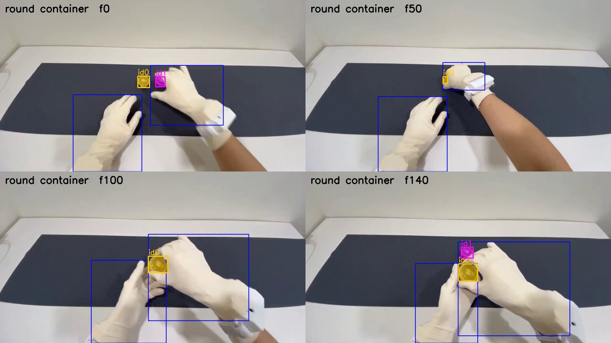
비교용 round container. 잡는 용기의 마스크가 small object와 같다.
오른손과 물체가 3px 안에 붙어 보이는 프레임 비율
프롬프트
접촉 전
접촉 후
small object
100%
100%
round container
98%
100%
small object는 실제 이름과 거의 같은 결과. 추가된 id 2(프레임 7~17)는 오른손 손목 근처의 작은 오검출.
너무 일반적인 단어는 아무것도 못 찾음.
1인칭 시점에서는 손이 닿기 훨씬 전부터 물체를 가려서 붙어 보임. 겹침만으로는 접촉과 가림을 구분할 수 없고, 잡은 뒤 물체가 손과 같이 움직이는지를 함께 봐야 함.
EXP-03물체 프롬프트: 스프레이병10/27
질문
EXP-02는 작은 용기였다. 스프레이병은 크고, 장갑과 비슷한 색의 밝은 책상 위에 있으며, 전체 프레임의 약 20%를 차지한다. 여기서도 small object가 통하는가.
입력
OpenGraph 에피소드 53, 프레임 136~285 (5초, 720p). 오른손이 책상 위 스프레이병으로 손을 뻗는다. 촉각 접촉은 클립 프레임 50. 이 에피소드는 머리가 움직인다.
방법
hand, small object, handheld object, bottle, 비교용 spray bottle을 각각 호출. 숫자는 EXP-02와 같은 방법으로 계산.
입력 클립의 한 프레임. 베이지 장갑과 밝은 책상, 나무 벽의 색이 비슷하다.
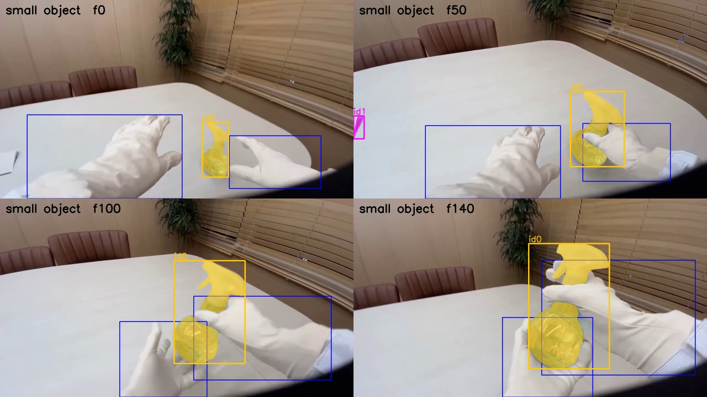
손id 0 스프레이병id 1 책상 끝의 다른 물체
small object 결과. 스프레이병은 모든 프레임에서 같은 id를 유지한다.
프롬프트별 검출, 에피소드 53
프롬프트
잡은 프레임
프레임당 개수
id (등장 프레임)
처리 시간
hand
100%
2.00
0 (150), 1 (150)
22.2초
handheld object
0%
0
없음
6.9초
small object
100%
1.44
0 (150), 1 (66)
16.9초
bottle
100%
1.00
0 (150)
14.9초
spray bottle
100%
1.00
0 (150)
17.2초
small object가 큰 병도 모든 프레임에서 찾고, 마스크는 실제 이름 spray bottle과 같음. 배경 물체 하나를 66프레임 더 잡는 차이뿐. OpenGraph 전체의 물체 프롬프트로 채택.
MediaPipe가 14%를 내는 유형의 장면인데 hand는 150프레임 모두 양손을 잡음. 어떤 프롬프트도 장갑을 물체로 잡지 않음.
오른손과 물체가 3px 안에 붙어 보이는 비율은 접촉 전 76~80%, 접촉 후 100%. EXP-02보다는 벌어지지만 이것만으로는 자를 수 없음.
EXP-04API 없이 데이터 점검10/27
질문
SAM을 돌리기 전에, 데이터셋만으로 라벨 품질, 정답, 카메라 흔들림에 대해 무엇을 알 수 있는가.
입력
OpenGraph 72개 에피소드 전체, 138,629 프레임. 프레임마다 손별 촉각 센서 80개 값, 접촉 라벨, 머리 IMU.
계산 방법
촉각 접촉: 손별로 센서 80개 값을 더해 임계값보다 크면 접촉
일치율: 촉각 접촉과 데이터셋 라벨(annotation.hand)이 같은 프레임 비율
접촉 시작: 비접촉에서 접촉으로 바뀌는 프레임. 라벨 시작마다 가장 가까운 촉각 시작과의 차이
카메라 흔들림: 머리 자이로 크기의 에피소드별 95번째 백분위
결과 (임계값 800)
일치율 왼손
98.66%
일치율 오른손
97.15%
접촉 구간
261개
5프레임 미만 구간 / 간격
0 / 0
구간 길이 p10 / p50 / p90
24 / 246 / 978 프레임
접촉 시작 시점 차이 (촉각 시작 − 라벨 시작, 프레임)
건수
중앙값
0 일치
±5 이내
p90 |차이|
오른손
660
0
51.5%
93.5%
4
왼손
280
−1
29.6%
79.6%
9
오른쪽 그림: 스프레이병 작업 (에피소드 48~62)오른쪽 그림: 나머지 에피소드
왼쪽: 임계값별 라벨 일치율. 800 이상에서 평탄하다. 임계값 0이면 에피소드 63~71이 72~74%로 떨어지는데, 이 에피소드들은 손을 쉬고 있을 때도 장갑이 약한 압력을 기록한다. 오른쪽: 에피소드별 머리 각속도.
촉각 임계값 800 채택. 라벨과 촉각 중 어느 쪽을 정답으로 써도 결과가 거의 같음.
오른손은 계획한 ±5프레임 허용 범위 사용 가능. 왼손은 촉각이 1프레임 먼저 오는 경향이 있고 ±5 이내가 79.6%라 범위를 넓히거나 손별로 보고.
짧은 구간과 간격이 없어 경계 채점 전에 라벨을 다듬을 필요 없음.
머리 IMU로 카메라 흔들림을 공짜로 얻음. 스프레이병 에피소드만 50~100배 흔들려, "카메라 안정성" 항목을 영상만으로 계산한 값과 대조할 수 있음.
EXP-05입력 30fps 대 10fps10/27
질문
세 프레임 중 하나만 보내도 손과 물체 추적이 그대로인가.
입력
EXP-02(에피소드 1)와 EXP-03(에피소드 53)의 같은 두 클립. 클립 프레임 0, 3, 6, …, 147만 남긴 50프레임.
방법
hand와 small object를 10fps 클립으로 다시 호출하고, 같은 시점의 30fps 결과와 마스크를 비교.
비교 방법
10fps 프레임 k가 30fps 프레임 3k와 같은 장면인지 픽셀 차이로 확인 (MSE 1.6~5.4, 바로 다음 프레임과는 78~206)
10fps의 각 id마다 가장 많이 겹치는 30fps id를 짝지음
짝끼리 프레임별 마스크 IoU 계산. 한쪽에만 있는 프레임은 0
처리량
hand 처리 시간
22.4초 → 9.5초 (에피소드 1)
small object
16.9초 → 5.9초 (에피소드 53)
원문 크기 (hand)
2.28 MB → 0.71 MB
주요 트랙의 마스크 IoU (10fps 대 30fps)
클립
트랙
검출 프레임
IoU 평균
최소
에피소드 1
왼손
50 / 50
0.992
0.987
에피소드 1
오른손
50 / 50
0.991
0.981
에피소드 1
잡는 용기
50 / 50
0.974
0.940
에피소드 53
왼손
50 / 50
0.990
0.975
에피소드 53
오른손
50 / 50
0.978
0.770
에피소드 53
스프레이병
50 / 50
0.983
0.968
0.77은 에피소드 53 클립 프레임 15 한 장으로, 머리가 돌면서 오른손이 화면 오른쪽 끝에 걸린 순간이다. 다음 프레임은 0.98로 돌아온다.
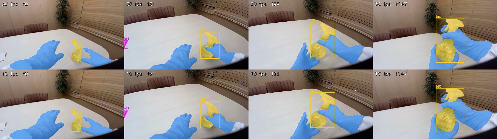
손스프레이병
에피소드 53. 위가 30fps, 아래가 10fps, 같은 원본 프레임. 두 줄의 마스크가 같다.
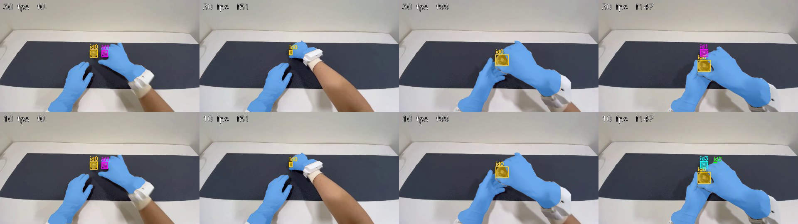
에피소드 1. 잡는 용기(id 0)는 같다. 프레임 147의 두 번째 용기는 30fps에서 id 1, 10fps에서 id 3으로 번호만 다르다.
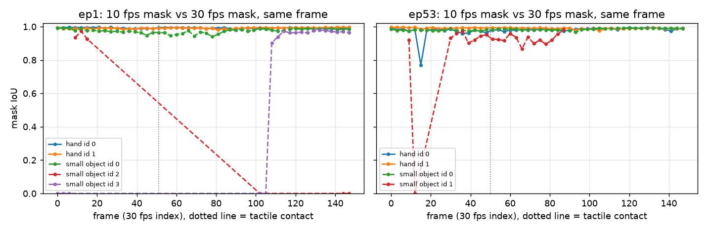
프레임별 마스크 IoU, 클립 전체에 걸친 트랙만. hand id 0은 에피소드 1에서 왼손, 에피소드 53에서 오른손이고 small object id 0은 두 클립 모두 잡는 물체. 점선은 촉각 접촉 시점.
10fps에서도 손과 잡는 물체는 같은 id, 같은 마스크. SAM 입력은 10fps로 결정.
잃는 것: 약 3초 동안 가려졌던 물체가 새 id로 돌아올 수 있음 (에피소드 1의 두 번째 용기). 접촉 단계는 손과 같이 움직이는 물체만 쓰므로 영향 없음.
10fps 신호는 0.1초(30fps 기준 3프레임) 단위라 ±5프레임 허용 범위의 최대 1/3을 씀. 경계 확정 단계에서는 경계 주변 30fps 프레임을 다시 봄.
EXP-06접촉 구간 검출 파일럿10/27
이 실험 뒤 측정 계획을 다시 맞추면서, 여기서 쓴 특징 13개 로지스틱 회귀는 비교 대상이 아니라 부록이 됐고 정답의 주 기준은 촉각 장갑으로 바뀌었다. 비교 대상은 요약 페이지의 측정 계획을 따른다. 접촉 그림 세 장은 주 정답(정리한 장갑)으로 다시 학습한 모델로 새로 그렸고, 표는 처음 실행(라벨, 장갑 원신호) 그대로다.
질문
튜닝 50개를 모두 보내기 전에, SAM 3.1이 에피소드 전체(1~2.5분)에서 추적을 유지하는가. 접촉 추정이 끝까지 돌고 첫 신호가 나오는가.
입력
튜닝 에피소드 3개. 0번은 146초, 투명 용기 사이로 작은 흑백 원판을 옮기며 오른손이 48번 닿는다. 30번은 68초, 주황색 종이 상자. 53번은 74초, 스프레이병이고 머리가 움직인다.
방법
에피소드 하나를 10fps 클립 하나로 만들어 hand와 small object로 한 번씩 요청. 접촉 추정 모델은 두 에피소드로 학습하고 남은 하나로 채점, 세 번 반복.
1. 보낸 요청
prompt: "hand" 또는 "small object"
video: 에피소드 하나 전체, 10fps
0번 1,457 / 30번 683 / 53번 741 frames
→ 에피소드 3개 × 프롬프트 2개 = 요청 6개
6개를 동시에 보내 93초에 모두 끝남. 요청 하나는 44~83초.
2. 받은 원문
형식은 EXP-01과 같다. 프레임마다 <Nf>로 시작하는 한 줄. 에피소드 하나에 원문이 약 100 MB(압축 기준).
Meta 공식 파서는 마스크 하나에 약 0.4초라 전체를 읽는 데 18시간쯤 걸린다. 같은 디코더를 다시 구현해 약 3ms로 줄였고, 마스크 345개가 공식 결과와 비트 단위로 같았다.
에피소드 전체에 대한 SAM 결과
에피소드 0
에피소드 30
에피소드 53
요청 시간 (hand / small object)
77초 / 83초
44초 / 44초
48초 / 49초
손이 잡힌 프레임
99.4%
99.0%
100%
손 id 수
2
2
3 (하나는 6프레임)
프레임당 물체 (평균 / 최대)
6.9 / 12
2.3 / 4
1.6 / 3
물체 id 수
16
4
5
왼손 접촉 프레임에서 왼손 검출
100%
100%
96.7%
오른손 접촉 프레임에서 오른손 검출
98.3%
97.2%
100%
SAM이 손을 잡은 구간라벨상 접촉물체 id별 등장 구간
에피소드 0. 원판과 용기가 많아 물체 id가 16개, 한 프레임에 최대 12개까지 쓰인다. SAM의 한도는 16개.
먼저 고쳐야 했던 것이 하나 있다. 처음에는 손 id마다 화면상 가운데 위치로 왼손·오른손을 정했다. 그런데 손은 화면 중앙을 자주 넘는다. 에피소드 53의 왼손은 프레임의 56%에서 화면 오른쪽에 있어서 오른손으로 잘못 붙었다. 지금은 두 손이 같이 보이는 프레임에서 더 자주 왼쪽에 있는 id를 왼손으로 정한다. 위 표는 고친 방식 기준이다.
숫자를 뽑는 방법
접촉 추정
10fps 프레임마다 손별로 특징 13개: 손 마스크와 가장 가까운 물체 마스크의 간격, 그 물체 중 손 옆에 붙은 비율, 카메라 움직임을 뺀 물체 이동, 물체와 손의 동반 이동, 손 이동, 보이는 물체 면적, 물체 수
규칙은 손이 대부분의 시간 동안 어떤 물체 옆에 있어서 긴 "접촉" 덩어리를 만든다. 그래서 IoU는 높지만 경계는 거의 못 찾는다. 시작 시점은 보정 없이 라벨보다 중앙값 6프레임(0.2초) 먼저 나왔고, 끝은 차이가 없었다. 장갑이 압력을 느끼기 전에 손이 닿아 보인다는 뜻이다. 지금은 학습 에피소드에서 잰 지연만큼 시작만 옮긴다.
프레임 AUC (해당 에피소드를 빼고 학습)
에피소드 0
에피소드 30
에피소드 53
왼손
0.93
0.70
0.91
오른손
0.59
0.65
0.92
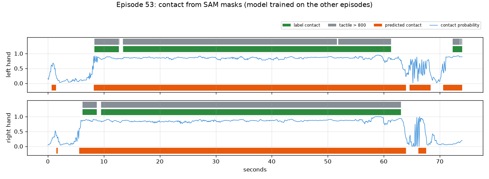
접촉 확률라벨상 접촉촉각 800 초과예측 접촉
에피소드 53, 에피소드 0과 30으로 학습한 모델. 오래 쥐는 구간은 잡는다. 짧게 놓는 순간은 놓치고, 손이 병 옆에 남아 있는 동안 끝이 늦게 끊긴다.
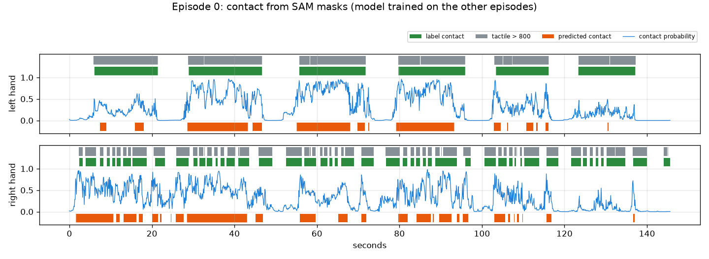
에피소드 0. 왼손은 용기를 여섯 번 길게 쥐고, 확률이 이를 따라간다. 오른손은 작은 원판을 48번 집는데 용기 옆을 떠나지 않아서 닿음과 안 닿음을 가르지 못한다.
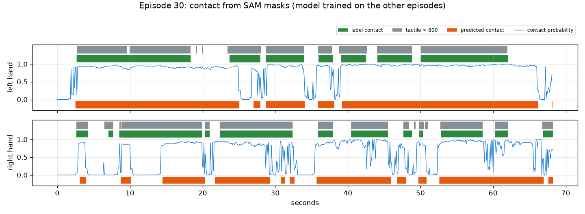
에피소드 30, 종이 상자. 긴 접촉은 잡는다. 손을 상자에 압력 없이 올려 둔 짧은 틈은 접촉으로 부르는 경우가 많다.
SAM 3.1은 10fps로 에피소드 전체를 처리함. 손 id는 끝까지 유지되고 각 손은 자기 접촉 프레임의 97~100%에서 잡힘. 에피소드 하나를 요청 하나로 보내도 됨.
큰 물체를 오래 쥐는 손은 프레임 단위로 잘 갈림(AUC 0.91~0.93). 용기 옆에서 작은 원판을 빠르게 집는 손은 못 가름(0.59).
경계 F1은 낮음(±5프레임 0.18). 학습 에피소드가 둘뿐이라 최종 수치는 아니지만, 마스크만으로는 ±5프레임 안에 경계를 놓을 수 없다는 신호. 계획에 있는 Muse Spark 경계 확인이 필요함.
보이는 접촉이 장갑 압력보다 약 0.2초 먼저 시작함. 끝은 지연 없음. 에피소드 3개에서 잰 값.
두 임계값을 채점한 것과 같은 확률에서 골랐기 때문에 위 수치는 약간 낙관적임.
EXP-07HOT3D 잡기 클립 수10/27
이 집계는 클립 규모를 가늠하는 용도로만 쓴다. 평가 2에 실제로 쓰는 클립은 손–물체 거리로 다시 자른 EXP-11 세트다(가중치 학습 튜닝 400개, AUC 검증 1,426개).
질문
평가 2는 HOT3D의 잡기 장면을 클립으로 잘라 SAM 3.1과 Muse Spark에 넣는다. 시퀀스 전체를 넣지 않고 잡기 주변만 넣으려면, 클립이 몇 개이고 얼마나 긴가.
입력
정답이 있는 HOT3D Aria 136개 시퀀스(튜닝 85, 검증 51, RGB 480,375 프레임)의 모션캡처. 영상은 쓰지 않음.
방법
HOT3D의 물체는 손이 옮길 때만 움직인다. 물체가 움직인 구간 하나를 잡기 한 번으로 보고 앞뒤 1초를 붙여 클립으로 만든다. API 호출 없음.
잡기 구간을 찾는 규칙 (30fps)
속도 = 0.2초 동안의 위치 변화. 가만히 있는 물체는 약 0.0003 m/s, 들고 가는 물체는 0.2~1 m/s. 0.03 m/s를 넘으면 움직임
0.5초보다 가깝게 떨어진 움직임은 하나로 합침
0.3초보다 짧거나, 시작점에서 3cm도 못 간 움직임은 버림
클립 = 움직임 + 앞 1초(손 뻗기) + 뒤 1초(놓기)
클립마다 확인한 것
모션캡처 손목이 물체에서 25cm 안으로 들어오는가
클립 프레임의 90% 이상이 데이터셋 품질 검사를 통과하는가
이 집계는 클립 수를 가늠하기 위한 것. 평가 2의 실제 클립은 손과 물체 사이 거리로 다시 자름
모션캡처로 센 잡기 클립
튜닝
검증
전체
시퀀스
85
51
136
잡기 구간 (물체 이동)
1,709
915
2,624
손목 25cm 이내
1,581
871
2,452
손목 조건 + 품질 검사 통과
1,439
713
2,152
움직임 길이 중앙값
2.3초
3.5초
2.7초
클립 길이 중앙값 / p90
4.3 / 10.3초
5.5 / 11.7초
4.6 / 10.9초
왼쪽: 클립 길이. 53%가 5초보다 짧다. 점선은 SAM 요청 최소 길이(10fps로 50프레임). 오른쪽: 시퀀스당 클립 수. 쓸 만한 클립이 하나도 없는 시퀀스가 2개.
SAM에 보낼 방식별 요청 수와 프레임 수 (프롬프트 2개)
방식
요청
처리 프레임
136개 시퀀스 전체, 30fps
272
960,750
클립마다 요청, 30fps
4,304
766,080
클립마다 요청, 10fps
4,304
293,156
겹치는 클립을 합쳐서, 10fps
1,452
220,812
검증 713개 전부 + 튜닝 무작위 400개, 10fps
2,226
158,070
HOT3D에서 쓸 만한 잡기 클립은 약 2,150개, 길이 중앙값 4.6초.
움직인 물체의 93%에 손목이 25cm 안으로 들어옴. 물체 움직임만으로도 잡기를 잘 찾아냄.
튜닝 클립을 전부 쓸 필요는 없음. 점수는 입력 7개짜리 로지스틱 회귀라 튜닝 클립 수백 개면 충분하고, AUC와 신뢰구간은 검증 클립에서 나옴.
이때의 결정(검증 713개 + 튜닝 400개)은 EXP-11 클립 세트로 대체됨.
EXP-08HOT3D 카메라 보정 방향10/27
질문
평가 2는 모션캡처 손과 물체를 HOT3D 영상 위에 투영한다. 우리가 쓰는 영상은 똑바로 선 방향이고, Aria 원본 영상은 90도 돌아가 있다. 카메라 보정값과 데이터셋 2D 박스는 어느 쪽 기준인가. 틀리면 평가 2의 모든 투영이 엉뚱한 곳에 떨어진다.
입력
세 사람의 시퀀스 3개. P0001_10a27bf7(검증), P0002_016222d1, P0011_72efb935(튜닝).
방법
세 가지로 확인. 보정값으로 투영한 물체를 데이터셋 2D 박스와 비교, 영상에서 직접 찾은 손을 데이터셋 손 박스와 비교, 영상 위에 그려서 눈으로 확인. API 호출 없음.
확인 1: 보정값 대 데이터셋 물체 박스
시퀀스마다 25프레임에서 물체 3D 모델을 모션캡처 자세로 투영: 물체 → 세계 → 헤드셋 → RGB 카메라 → 어안 렌즈 모델
투영된 점들을 감싸는 박스를 데이터셋 물체 박스와 IoU로 비교
투영 그대로, 시계 방향 90도, 반시계 방향 90도 세 가지로 비교
확인 2: 영상 대 데이터셋 손 박스
HOT3D는 맨손이라 MediaPipe가 잘 동작함. 시퀀스마다 영상 150프레임에서 손을 찾음
그 손 박스를 데이터셋 손 박스와 방향별로 비교
영상이 타임스탬프보다 1프레임 적어서 시간 어긋남도 −2~+2프레임으로 같이 확인
확인 1: 투영 대 데이터셋 물체 박스 (IoU 평균)
시퀀스
박스 수
투영 그대로
시계 90°
반시계 90°
P0001_10a27bf7
68
0.86
0.00
0.00
P0002_016222d1
116
0.98
0.02
0.02
P0011_72efb935
111
0.95
0.01
0.01
보정값과 데이터셋 박스는 서로 잘 맞는다. 투영 계산(자세와 렌즈 모델)이 맞다는 뜻이다. 하지만 이것만으로는 영상이 어느 방향인지 알 수 없다.
확인 2: 영상에서 찾은 손 대 데이터셋 손 박스 (IoU 평균)
시퀀스
그대로, 0
반시계, 0
시계, −1
시계, 0
시계, +1
P0001_10a27bf7
0.01
0.00
0.41
0.43
0.42
P0002_016222d1
0.03
0.00
0.43
0.45
0.44
P0011_72efb935
0.00
0.00
0.37
0.38
0.38
MediaPipe 박스는 손 관절 21개만 감싸고 데이터셋 박스는 보이는 손 전체를 감싸서 IoU는 0.4 근처가 최대다. 중요한 건 최고점의 위치이고, 세 시퀀스 모두 시계 방향, 시간 어긋남 0에서 가장 높다.
데이터셋 물체 박스투영한 3D 모델
P0002_016222d1. 왼쪽부터 투영 그대로, 시계 90°, 반시계 90°. 시계 방향만 모델이 책상 위 실제 주걱과 접시에 놓인다. 데이터셋 박스는 그대로 그리면 모니터 근처 엉뚱한 곳에 있다.
데이터셋 물체 박스투영한 3D 모델
P0001_10a27bf7. 시계 방향이면 머그가 오른손 아래, 덤벨이 실제 덤벨 위에 놓인다.
카메라 보정값과 데이터셋 2D 박스(물체, 손)는 Aria 원본 방향 기준. 우리가 쓰는 영상은 그 원본을 시계 방향으로 90도 돌린 것.
열린 문제 1번 해결. 이제 SAM에 보낼 클립 위에 모션캡처 손과 물체를 그릴 수 있고, SAM 박스도 같은 회전 뒤에 데이터셋 박스와 비교할 수 있음.
EXP-09HOT3D 손가락 끝 3D 위치10/27
질문
평가 2의 "로봇이 따라할 수 있는가" 정답은 물체 옆 손가락 끝의 3D 위치가 필요하다. HOT3D는 손을 두 형식으로 준다. MANO는 별도 사이트에 등록해야 받는 모델 파일이 필요하고, UmeTrack은 HOT3D 안에 들어 있다. UmeTrack만으로 손가락 끝을 얻을 수 있는가.
입력
시퀀스 3개(P0001_10a27bf7, P0002_016222d1, P0011_72efb935)의 UmeTrack 손 모델과 손 자세 기록, 물체 3D 모델.
방법
UmeTrack 손 모델로 정기구학을 직접 구현해 손 관절 21개 위치를 계산. 영상과 데이터셋 손 박스로 맞는지 확인하고, 잡는 동안 손가락 끝과 물체 표면의 거리를 잼. API 호출 없음.
손 관절을 계산하는 방법
사람마다 손 모델 하나: 관절 22개(정지 위치, 회전축, 부모), 뼈에 붙은 지점 21개, 788개 꼭짓점 메시
시점마다 손별로 관절 각도 22개와 세계 좌표계의 손목 자세
관절마다 부모 위에 쌓아 각도만큼 회전시키고, 지점은 뼈를 따라 움직임. 지점 0~4가 다섯 손가락 끝
모델은 한 손 기준이라 다른 손은 거울상. 어느 손을 어느 축으로 뒤집는지 몰라서 손마다 네 가지(그대로, x·y·z 거울)를 모두 시험
확인 방법
확인 1: 지점 21개를 원본 영상에 투영(EXP-08의 렌즈 모델)해 데이터셋 손 박스 안에 들어오는 비율. 시퀀스마다 120프레임
확인 2: 뼈대를 영상 위에 그려서 눈으로 확인
확인 3: EXP-07의 잡기 구간마다, 움직임 한가운데와 시작 1.5초 전에 가장 가까운 손가락 끝과 물체 표면(3D 모델에서 2만 점)의 거리
확인 1: 손 지점이 데이터셋 손 박스 안에 들어온 비율 (P0001 / P0002 / P0011)
손
그대로
x 거울
y 거울
z 거울
손 0
1.00 / 1.00 / 1.00
0.06 / 0.05 / 0.07
0.72 / 0.66 / 0.58
0.99 / 0.99 / 0.99
손 1
0.05 / 0.05 / 0.06
1.00 / 1.00 / 1.00
0.06 / 0.05 / 0.06
0.06 / 0.06 / 0.06
손 1은 x축으로 뒤집었을 때만 맞는다. 그러니 손 모델은 손 0에 그대로 쓰고, 손 1은 x 거울이다. 손 0은 z 거울에서도 박스 안에 들어오는데, 박스로는 손과 그 거울상을 구분할 수 없기 때문이다. 실제 모델이라면 한 손에는 뒤집지 않고 맞아야 하고, 손 1이 그 경우를 배제한다.
손 0 (왼손)손 1 (오른손)손가락 끝
P0001_10a27bf7. 뼈대가 덤벨, 휴대폰, 머그를 쥔 실제 손 위에 놓인다.P0002_016222d1. 오른손 손가락 끝이 감자 으깨개 손잡이를 감싼다.
확인 3: 손가락 끝과 물체 표면 사이 거리
잡기 구간
가장 가까운 끝, 중앙값
p90
15mm 이내
끝 2개 이상 15mm 이내
움직임 한가운데
65
2.3mm
6.0mm
97%
95%
움직임 1.5초 전
60
265mm
601mm
5%
5%
물체가 움직이는 동안 손가락 끝은 표면에서 몇 mm 안에 있고, 움직이기 전에는 손이 멀리 있다. "로봇이 따라할 수 있는가" 정답은 이 신호 위에 만든다.
UmeTrack만으로 손가락 끝을 포함한 손 지점 21개를 물체와 같은 세계 좌표계에서 3D로 얻음. MANO는 필요 없고 등록도 필요 없음.
손 0은 왼손으로 모델을 그대로, 손 1은 오른손으로 모델을 x축 거울로 씀.
잡는 동안 손가락 끝과 표면의 거리가 몇 mm 수준이라 정답 규칙("엄지와 다른 손가락 하나 이상이 표면 가까이, 어느 손가락도 깊이 들어가지 않음")에 쓰기 충분함.
다음: 이 지점들을 Allegro 로봇 손으로 옮겨 로봇 손가락 끝과 물체 표면을 잼. 이것으로 정답 라벨을 만들고 튜닝 세트에서 쏠림을 확인.
EXP-10로봇 재현 정답 라벨과 쏠림 점검10/27
이전 라벨: 이 라벨은 주로 리타게팅의 부작용을 잰다(EXP-15). 손 크기 비율로 늘린 리타게팅이 Allegro 손가락 끝을 사람 손가락 끝에서 31mm, 꽉 쥔 캔 표면에서 25mm 떨어뜨리고, 라벨이 손 크기에 따라 달라진다. 아래 54%가 쏠림 점검을 통과한 것도 이 왜곡 때문이다. 평가 2의 정답은 v2 라벨로 바뀌었다(EXP-16). 기록으로 남겨 둔다.
질문
평가 2의 정답은 "로봇 손이 이 사람의 잡기를 따라할 수 있는가"이다. 가장 큰 위험은 라벨 쏠림이었다. Allegro 로봇 손이 사람 손보다 커서, 기준이 엄격하면 거의 전부 불가, 느슨하면 거의 전부 가능이 될 수 있다. 계획은 튜닝 세트에서 가능 비율이 20~80% 안에 들어올 것을 요구한다.
입력
튜닝 85개 시퀀스의 잡기 1,422개(EXP-07, 접촉 프레임에 손 자세가 있는 것). 접촉 프레임은 물체 움직임의 한가운데.
방법
물체에 더 가까운 손의 지점(EXP-09)을 Allegro 로봇 손으로 옮기고, 로봇 손가락 끝과 물체 표면 사이 거리로 판정. API 호출 없음.
크기 비율 = Allegro 손목~검지 끝 길이(0.247m) / 그 사람의 길이. 중앙값 1.26
Allegro 손목을 사람 손목 자리에 같은 방향으로 놓고, 로봇 손의 모든 링크 점을 물체 좌표계로 옮김
목표 벡터와의 오차 중앙값 4.3%
"따라할 수 있음" 판정 규칙
물체 표면까지의 부호 거리: 3D 모델 표면 3만 점 중 가장 가까운 점 기준, 안쪽이면 음수
손목을 최대 R만큼(1cm 간격) 옮겨 보면서, 아래를 모두 만족하는 위치가 하나라도 있으면 가능
로봇 엄지 끝이 표면에서 near 이내
다른 로봇 손가락 끝 하나 이상도 near 이내
어떤 로봇 링크도 물체 안으로 deep보다 깊이 들어가지 않음
기준별 "따라할 수 있음" 비율 (튜닝, 잡기 1,422개)
near
deep
손목 고정
최대 2cm 이동
최대 4cm 이동
1.0cm
1cm
9.4%
33.5%
45.9%
1.5cm
0.5cm
19.7%
53.3%
66.8%
1.5cm
1cm
20.7%
54.4%
66.9%
1.5cm
2cm
21.6%
55.2%
67.1%
2.0cm
1cm
39.0%
75.7%
86.6%
3.0cm
1cm
69.1%
94.4%
97.4%
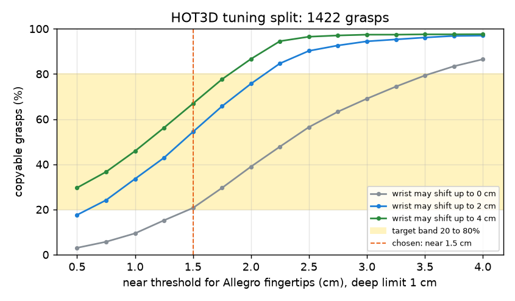
계획의 20~80% 범위
near 기준이 커질수록 올라가는 "따라할 수 있음" 비율, 손목 이동 한계 세 가지.
비율은 거의 near 기준과 손목 이동 한계로 정해짐. deep 기준은 거의 영향이 없음. 손목을 고정했을 때 로봇 링크가 1cm보다 깊이 들어가는 잡기는 4.1%뿐.
손목 고정 상태에서 로봇 엄지 끝은 표면에서 중앙값 11mm, 가장 가까운 다른 손가락 끝은 19mm.
같은 프레임에서 사람 손 기준 규칙(엄지와 다른 손가락 하나가 15mm 이내)은 89.5%가 만족.
정한 기준
near 1.5cm(EXP-09의 사람 손가락 기준과 같은 거리), deep 1cm, 손목 최대 2cm 이동. 이때 "따라할 수 있음"은 54.4%. 이 이동 한계에서는 near를 0.75cm부터 2.0cm까지 바꿔도 20~80% 범위 안에 있어서, 경계에 아슬아슬하게 걸친 값이 아니다. 이후로 이 기준은 고정한다.
사람별 "따라할 수 있음" 비율 (정한 기준)
P0002
P0003
P0009
P0011
P0014
P0015
잡기 수
147
122
427
326
147
253
따라할 수 있음
29%
38%
76%
48%
35%
60%
물체별 "따라할 수 있음" 비율 (잡기 25개 이상인 물체)
낮은 쪽
비율
높은 쪽
비율
토마토소스 캔
26%
플라스크
94%
수프 캔
27%
그릇
93%
마우스
28%
화병
84%
랜치 소스 병
31%
대나무 접시
82%
감자 으깨개
34%
무늬 머그
78%
왼손 50%, 오른손 57%.
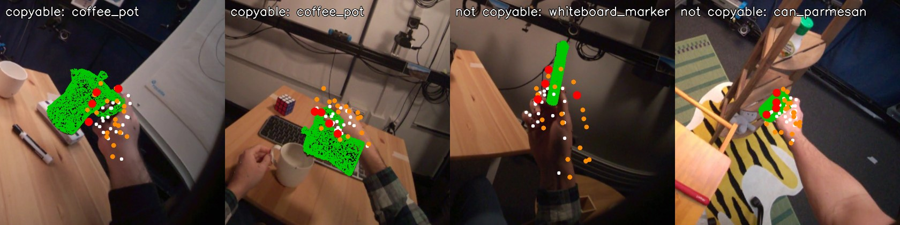
물체 모델사람 손 지점Allegro 링크 (손목 이동 후)Allegro 손가락 끝
튜닝 잡기 네 개. 왼쪽 둘은 따라할 수 있음(커피포트), 오른쪽 둘은 따라할 수 없음(보드 마커, 파마산 캔).
정답 라벨을 만드는 전 과정이 유료 호출 없이 돌아감: 모션캡처 손 → UmeTrack 지점 → Allegro 로봇 손 → 물체 모델까지의 부호 거리.
정한 기준에서 라벨 쏠림은 문제되지 않음. 튜닝 세트 54%가 "따라할 수 있음"이고, 기준을 넓게 바꿔도 20~80% 안에 머묾.
다만 비율은 대부분 near 기준이 정함. 라벨은 "로봇 손가락 끝이 얼마나 가까이 오는가"라는 연속값을 예/아니오로 자른 것이라, 하나의 수치가 아니라 기준별 곡선과 함께 보고함.
물체(26~94%)와 사람(29~76%)에 따라 크게 달라짐. 평가 2가 예측할 거리가 있다는 뜻이고, 검증 세트 사람들의 비율은 다를 수 있음. AUC는 비율에 좌우되지 않음.
한계: Allegro 점은 손가락 표면이 아니라 링크 위치임. 안쪽·바깥쪽 부호는 가장 가까운 표면 점의 법선으로 정해서 얇은 모서리에서 틀릴 수 있음. 잡기마다 한 프레임만 봄.
EXP-11평가 2 클립과 검증 세트 라벨10/27
이전 라벨: 이 실험은 EXP-10 라벨을 썼다. 이 라벨은 리타게팅 부작용을 주로 재서(EXP-15) v2 라벨로 바뀌었다(EXP-16). 아래 "따라할 수 있음" 비율은 이전 라벨 기준이다. 클립 자체는 그대로 쓴다. 검증 클립의 v2 라벨은 46.4%(EXP-20).
질문
튜닝 세트에서 고정한 기준(EXP-10)으로 검증 세트에서도 "따라할 수 있음" 비율이 비슷하게 나오는가. 그리고 계획대로 우리 영상 파이프라인이 아니라 모션캡처 손–물체 거리로 평가 2 클립을 자르면 어떤 클립과 라벨이 나오는가.
입력
정답이 있는 HOT3D 136개 시퀀스 전체, 30fps RGB 프레임 전부.
방법
EXP-10의 규칙(near 1.5cm, deep 1cm, 손목 최대 2cm 이동)을 바꾸지 않고 검증 세트 잡기에 적용. 클립은 손가락 끝과 물체 표면 거리로 새로 자름. API 호출 없음.
클립을 자르는 규칙
손과 물체 쌍마다, UmeTrack 손가락 끝 2개 이상이 물체 표면 15mm 안이면 그 프레임은 접촉
0.5초보다 짧은 틈은 이어 붙이고, 0.3초 이상 이어진 접촉만 남김
클립 = 접촉 앞 1초(손 뻗기) + 접촉 + 뒤 1초(놓기)
물체가 3cm 이상 움직이고(스친 것이 아니라 실제로 집은 것), 클립 프레임 90% 이상이 품질 검사를 통과한 것만 남김
라벨을 붙이는 방법
접촉 구간의 한가운데 프레임에서, 그 클립의 손을 Allegro 로봇 손으로 옮겨 판정
클립은 손 하나 단위. 양손으로 들면 클립이 두 개, 내려놨다 다시 잡아도 두 개
136개 시퀀스 전 프레임의 손가락 끝 거리를 한 번에 계산 (12개 프로세스로 17초)
고정한 기준을 검증 세트에 적용 (EXP-07의 잡기 기준)
잡기
따라할 수 있음
사람 손 기준 확인
사람별
튜닝
1,422
54.4%
89.5%
29~76%
검증
707
52.6%
90.0%
P0001 30%, P0010 47%, P0012 73%
모션캡처 손–물체 거리로 자른 평가 2 클립
튜닝
검증
접촉 (손 단위)
2,987
1,858
물체가 3cm 이상 움직임
2,656
1,750
거기에 품질 검사 통과
2,433
1,449
라벨 붙음 (접촉 프레임에 손 자세 있음)
2,385
1,426
접촉 길이 중앙값
2.2초
2.2초
클립 길이 중앙값 / p90
4.2 / 9.7초
4.2 / 8.9초
접촉 대부분 동안 양손이 물체에
29.5%
33.5%
따라할 수 있음
53.3%
51.7%
클립 40개 이상인 물체 중 가장 낮은 쪽은 파마산 캔 27%, 수프 캔 29%, 감자 으깨개 32%, 토마토소스 캔 33%, 우유팩 34%. 가장 높은 쪽은 무늬 머그 73%, 그릇 75%, 흰 머그 75%, 대나무 접시 77%, 공룡 장난감 79%.
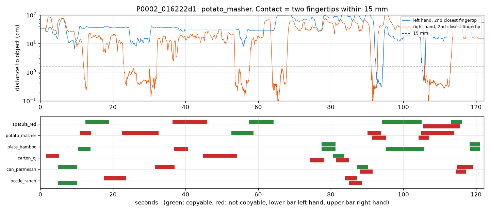
왼손오른손15mm따라할 수 있음따라할 수 없음
P0002_016222d1(튜닝). 위: 감자 으깨개에서 각 손의 두 번째로 가까운 손가락 끝까지의 거리. 점선 아래가 접촉. 아래: 이 시퀀스에서 잘린 모든 클립. 아래 막대가 왼손, 위 막대가 오른손.
같은 시퀀스 안에서 겹치는 클립은 하나의 SAM 요청으로 묶어 보낸다. SAM이 그 구간의 모든 손과 물체를 추적하고, 클립마다 자기 프레임만 꺼내 쓴다. 이렇게 하면 처리할 프레임이 절반 정도로 준다.
평가 2의 클립 목록과 정답이 모션캡처만으로 준비됨. 튜닝 2,385개, 검증 1,426개, 두 세트 모두 52~53%가 "따라할 수 있음".
검증 세트 비율(잡기 기준 52.6%, 클립 기준 51.7%)이 튜닝과 비슷해서, 고정한 기준이 그대로 통함. 사람별 차이는 검증 세트에서도 큼(30~73%).
클립의 약 3분의 1은 양손 잡기. 라벨은 손 단위.
평가 2에 쓸 클립은 검증 1,426개 전부와 튜닝 무작위 400개(seed 20261026).
EXP-12무료 채점 항목의 신호와 물체 기준선10/27
이전 라벨: 이 실험은 EXP-10 라벨을 썼다. 이 라벨은 리타게팅 부작용을 주로 재서(EXP-15) v2 라벨로 바뀌었다(EXP-16). 아래 물체 기준선과 항목별 AUC는 이전 라벨 기준이다. v2 라벨로 다시 잰 값은 EXP-17(물체 0.74, 무료 항목 0.53).
질문
평가 2의 주 비교는 우리 점수 대 체크리스트 없이 같은 질문을 받은 Muse Spark다. "따라할 수 있음" 비율이 물체마다 26~94%로 달라서, 물체만 알아봐도 꽤 맞힐 수 있다. 크레딧을 쓰기 전에, 유료 호출 없이 계산되는 채점 항목 3개에 신호가 있는지, 물체만으로는 얼마나 맞히는지 본다.
입력
EXP-11의 튜닝 클립 2,385개(53.3%가 "따라할 수 있음"). 검증 클립은 보지 않음.
방법
시퀀스마다 영상을 10fps로 한 번 훑어 카메라 움직임과 MediaPipe 손을 구하고, 클립마다 항목 3개를 상·중·하로 매김. 튜닝 6명 중 한 명씩 빼고 나머지로 학습해 뺀 사람을 채점. API 호출 없음.
세 항목 (영상만 씀)
카메라 안정성: 프레임 사이 코너를 추적해 맞춘 움직임의 클립 내 90번째 백분위
리타게팅 복원성: 접촉 동안 MediaPipe 손을 Allegro로 옮겨, 손이 잡힌 비율 × (1 − 벡터 오차)
동작 완결성: 접촉 전 1초(손 뻗기)와 후 1초(놓기)에 손이 보이고 움직이는가
등급 경계는 튜닝 세트 3분위로 정하고 고정
비교한 모델 (사람 하나씩 빼기)
물체 기준선: 나머지 5명에서 잰 물체별 "따라할 수 있음" 비율을 뺀 사람의 클립에 그대로 줌
세 항목 등급만 넣은 로지스틱 회귀
물체 비율 + 세 항목
항목이 제대로 재는지는 모션캡처로 따로 확인(입력으로 쓰지 않음)
항목이 재려는 것을 제대로 재는가
확인
결과
카메라 움직임 대 모션캡처 머리 회전 (클립별 스피어만)
0.93
MediaPipe 왼손·오른손이 모션캡처 손과 일치
1,197 / 1,241 (96.5%)
접촉 동안 클립의 손을 MediaPipe가 찾은 비율, 중앙값
87%
리타게팅 벡터 오차, 중앙값
10%
"따라할 수 있음"을 얼마나 가르는가 (튜닝 클립, AUC)
신호
AUC
카메라 안정성 등급
0.533
리타게팅 복원성 등급
0.494
동작 완결성 등급
0.515
같은 세 항목, 물체 안에서 (가중 평균)
0.517 / 0.529 / 0.530
세 등급 로지스틱 회귀, 사람 하나씩 빼고 6명 평균
0.534
물체 기준선, 사람 하나씩 빼고 6명 평균
0.698 (사람별 0.59~0.81)
물체 비율 + 세 등급
0.693
무료 항목 세 개 (각각, 합친 것)물체만, 물체 + 세 항목
세 항목은 물체 위에 아무것도 더하지 못한다.
사람을 합친 AUC의 함정
빼고 채점한 6명을 하나로 합쳐 AUC를 내면 값이 떨어진다. 물체 기준선은 0.616, 세 등급은 0.365로 무작위보다도 낮다. 원인은 항목이 아니라 사람이다. 사람마다 "따라할 수 있음" 비율이 29%에서 74%까지 달라서, 비율이 높은 사람을 빼고 학습한 모델은 그 사람 클립에 낮은 점수를 준다. 합치면 클립이 아니라 사람을 줄 세우게 된다. 검증 세트도 사람별로 30%, 47%, 73%로 같은 문제가 있으므로, 검증 AUC는 합친 값과 사람별 값을 함께 보고한다.
세 항목은 측정 도구로는 정확함. 카메라 움직임은 머리 회전과 0.93으로 맞고, MediaPipe는 96.5%에서 맞는 손을 찾음.
그러나 "따라할 수 있음"에 대한 정보는 없음(AUC 0.49~0.53, 물체 안에서도 같음). 세 항목은 영상이 얼마나 좋은지를 재고, 정답 라벨은 Allegro 손이 그 잡기에 맞는지를 잼. 서로 다른 질문.
물체만으로 AUC 0.70(사람별 평균). Muse Spark가 물체를 알아보면 그 근처가 나올 것이고, 지금 계획대로라면 우리 점수는 주 비교에서 질 수 있음. Muse Spark 항목 2개(손가락 가림, 물체 성질)가 이 신호를 담아야 함.
크레딧을 쓰기 전에 할 일: 리타게팅 복원성을 지원서가 말한 대로 "손 모양이 로봇 손에 맞는가"를 재도록 바꿈. 후보는 MediaPipe에서 얻는 손 벌림, 손가락 굽힘, 잡기 유형, 나중에 SAM 마스크로 물체 크기 대 손 크기. 같은 튜닝 클립에서 무료로 시험 가능.
보완재 비교(Muse Spark 단독 대 Muse Spark + 우리 항목)를 주 비교 옆에 같이 보고하고, 사람별 AUC를 합친 AUC 옆에 둠.
한계: MediaPipe가 원본 어안 영상에서 돎. 3분위 등급은 작은 효과를 가리지만 0.5에 이렇게 가까운 AUC를 가리지는 않음.
EXP-13손 모양으로 바꾼 리타게팅 항목10/27
이전 라벨: 이 실험은 EXP-10 라벨을 썼다. 이 라벨은 리타게팅 부작용을 주로 재서(EXP-15) v2 라벨로 바뀌었다(EXP-16). 아래 AUC는 이전 라벨 기준이다. v2 라벨에서 영상 손 모양은 0.52로 신호를 잃었다(EXP-17). 이전 라벨의 0.63은 리타게팅 부작용을 배운 것이었다.
질문
EXP-12의 무료 항목은 영상은 잘 재지만 "따라할 수 있음"을 가르지 못했다. 지원서는 리타게팅 항목을 "손 모양이 로봇 손에 맞는가"라고 적었다. 영상에서 얻은 손 모양이 "따라할 수 있음"을 예측하는가, 물체 기준선 위에 무언가를 더하는가.
입력
튜닝 클립 2,385개 중 접촉 동안 MediaPipe가 그 손을 한 번도 찾지 못한 54개를 뺀 2,331개(53.4%가 "따라할 수 있음"). 검증 클립은 쓰지 않음.
방법
접촉 프레임(10fps)의 손 지점 21개에서 특징 10개의 중앙값을 냄. 같은 특징을 영상(MediaPipe)과 모션캡처(UmeTrack)에서 각각 계산. 모션캡처 쪽은 완벽한 손 추적기일 때의 상한을 보려는 것이고 점수의 입력으로는 쓰지 않음.
손 모양 특징 10개
손 벌림: 엄지 끝–검지 끝, 엄지 끝–중지 끝 거리를 손 크기(손목–중지 뿌리)로 나눔
다섯 손가락의 굽힘: 1 − (뿌리–끝 직선 거리) / (관절을 따라간 길이)
벌어짐: 검지와 새끼손가락 방향 사이 각도
오므림: 손가락 끝과 손바닥 중심 거리의 평균을 손 크기로 나눔
집기 대 쥐기: 검지 굽힘 − 약지·새끼 굽힘 평균
채점 방법
로지스틱 회귀, 튜닝 6명 중 한 명씩 빼고 학습해 뺀 사람을 채점
AUC는 사람별로 내고 6명 평균을 씀(EXP-12의 합산 함정 때문)
"물체 안"은 같은 물체끼리만 비교한 AUC를 클립 수로 가중 평균한 값
특징 하나씩 (튜닝 클립, AUC)
특징
영상
모션캡처
손 벌림, 엄지–검지
0.37
0.37
손 벌림, 엄지–중지
0.39
0.38
오므림
0.39
0.35
굽힘, 중지 / 약지
0.59 / 0.59
0.62 / 0.63
벌어짐
0.54
0.61
집기 대 쥐기
0.51
0.49
0.5보다 낮은 AUC는 관계가 거꾸로라는 뜻이다. 손을 크게 벌릴수록 "따라할 수 없음" 쪽이다. 영상과 모션캡처가 방향과 크기에서 일치한다.
모델 비교 (사람 하나씩 빼고)
모델
AUC, 6명 평균
사람별 범위
물체 안
물체 기준선
0.693
0.59~0.81
—
영상 손 모양
0.632
0.56~0.71
0.48
영상 손 모양 + 물체
0.722
0.62~0.84
0.42
모션캡처 손 모양 (상한)
0.671
0.58~0.74
0.56
모션캡처 손 모양 + 물체
0.729
0.63~0.82
0.51
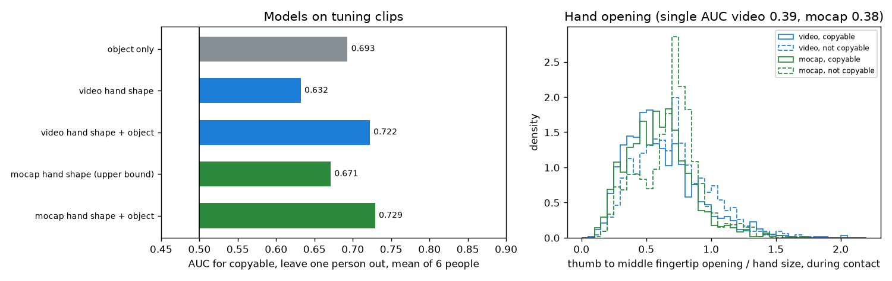
물체만영상 손 모양모션캡처 손 모양따라할 수 있음따라할 수 없음
왼쪽: 모델별 AUC. 오른쪽: 접촉 동안 엄지 끝과 중지 끝 사이 벌림. 따라할 수 없는 잡기가 영상과 모션캡처 모두에서 더 벌어져 있다.
영상 손 모양은 "따라할 수 있음"을 예측함(0.63). EXP-12 항목들과 다름. 완벽한 모션캡처 손 모양(0.67)이 얻는 것의 대부분을 영상으로 얻음.
주로 물체 크기를 대신 재는 신호임. 손을 크게 벌리면 큰 물체이고, 큰 물체(캔, 우유팩)는 덜 따라할 수 있음. 같은 물체 안에서는 가르지 못함(0.48).
물체 기준선(0.69)보다는 낮지만, 둘을 합치면 0.72로 물체 위에 약 0.03을 더함.
평가 2에서는 무료 항목보다 낫지만, Muse Spark가 물체를 잘 알아보면 주 비교에서는 여전히 질 수 있음. 이득이 보일 곳은 보완재 비교(Muse Spark 단독 대 Muse Spark + 우리 항목).
결정: 리타게팅 복원성 항목을 "손 모양 적합도"로 바꿈. 영상 특징 10개 로지스틱 회귀를 튜닝 3분위로 등급화. 최종 점수 가중치용 튜닝 클립 400개와 겹치지 않는 튜닝 클립으로 학습해 두 모델이 학습 데이터를 공유하지 않게 함.
한계: MediaPipe가 원본 어안 영상에서 돎. 합친 모델의 물체 안 AUC가 0.42로 0.5보다 낮음. 물체를 가로질러서는 오므린 손이 "따라할 수 있음"이지만, 같은 물체 안에서는 관계가 약하고 조금 거꾸로라 "손을 오므리면 따라할 수 있다"로 읽으면 안 됨.
EXP-14방법 B(SAM 규칙) 파일럿10/27
질문
측정 계획의 평가 1 비교 대상 중 방법 B는 지원서의 SAM 규칙(마스크 겹침 + 동반 이동)이다. 구현됐는가, 장갑 정답에 대해 끝까지 도는가, 참고 행 "항상 접촉"·"항상 비접촉"과 비교하면 어떤가. 결과가 아니라 코드 점검이다.
입력
튜닝 에피소드 0, 30, 53의 SAM 3.1 출력(EXP-06, 10fps). 새 유료 호출 없음.
방법
각 에피소드마다 나머지 두 에피소드에서 기준값과 지연 보정을 골라 채점(한 에피소드씩 빼기). 고르는 기준은 boundary F1 ±15프레임 + IoU.
방법 B 규칙 (손별, 10fps)
근접: 손 마스크가 물체 마스크에서 gap_px 픽셀 안
동반 이동: 가장 가까운 물체가 0.3초 동안 자기 크기의 move배 이상 움직이고(카메라 움직임 제외) 손과 함께 움직임
접촉 = 근접이 이어진 구간(0.2초 이하 틈은 이음) 중 동반 이동 프레임이 하나라도 있는 구간. 물체가 손과 함께 움직였으면 닿은 것이고, 손이 물체 곁에 있는 동안 계속됨
장갑 정리본 (이 실험 이후 주 정답): 촉각 합 > 800에서 0.1초 이하 압력 끊김은 잇고, 0.1초 미만 튀는 값은 버림
장갑 원신호: 정리하지 않은 촉각 합 > 800 (확인용)
데이터셋 접촉 라벨 (확인용)
장갑 원신호는 깜빡인다
세 에피소드에서 장갑은 접촉 구간 124개를 낸다(양손 합). 그중 21개가 0.2초보다 짧고, 구간 사이 틈 28개가 0.1초 이하다. 데이터셋 라벨은 78개 구간에 그런 것이 하나도 없다. 이 깜빡임은 손을 뗀 것이 아니라 압력이 임계값을 넘나드는 것이라, 어떤 영상 방법도 볼 수 없는 경계를 만든다. 경계 수는 장갑 원신호 248개, 정리본 190개, 라벨 156개.
방법 B 대 참고 행 (한 에피소드씩 빼고)
정답
방법
F1 ±5
F1 ±15
IoU
찾은 경계 / 정답
장갑 정리본 (주)
방법 B
0.07
0.15
0.747
52 / 190
장갑 정리본 (주)
항상 접촉
0.02
0.02
0.669
12 / 190
장갑 정리본 (주)
항상 비접촉
0
0
0
0 / 190
장갑 원신호
방법 B
0.04
0.12
0.745
52 / 248
장갑 원신호
항상 접촉
0.02
0.02
0.666
12 / 248
라벨
방법 B
0.02
0.14
0.744
52 / 156
라벨
항상 접촉
0.04
0.04
0.663
12 / 156
에피소드별(장갑 원신호): 0번 IoU 0.72·F1 ±15 0.05, 30번 0.60·0.23, 53번 0.94·0.27. 매번 gap_px 2가 골라졌다. 장갑 원신호 대비 시작은 4프레임 빠르고 끝은 6프레임 늦다(중앙값). 참고로 EXP-06의 부록 모델은 같은 에피소드에서 F1 0.16 / 0.30, IoU 0.64였지만, 그 기준값은 채점한 예측에서 골라서 낙관적인 값이다.
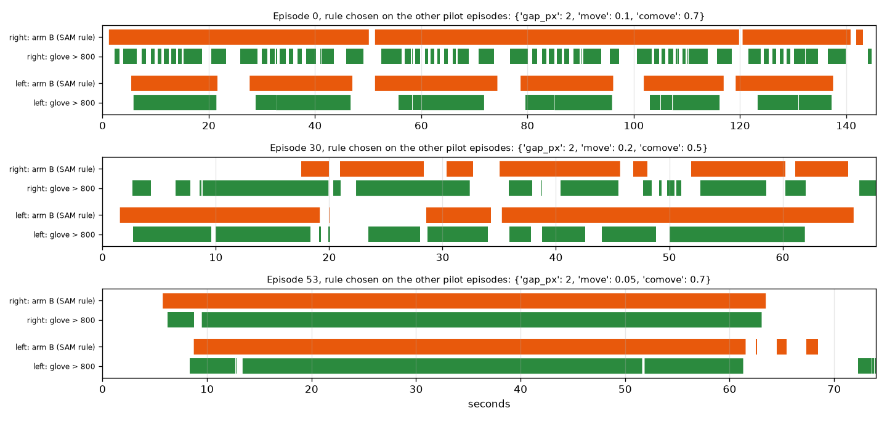
정리한 장갑 (주 정답)방법 B 예측 (기준값은 나머지 두 에피소드에서 이 정답으로)
오래 쥐는 구간은 찾는다(53번, 0번 왼손). 손이 쉬지 않고 물체들 곁에서 일할 때(0번 오른손, 30번)는 여러 접촉을 하나의 긴 덩어리로 묶는다.
방법 B와 참고 행 두 개가 장갑과 라벨 정답에 대해 끝까지 돎. 기준값은 다른 에피소드에서 고름. 튜닝 50개에 돌릴 코드는 준비됨.
방법 B는 IoU에서 "항상 접촉"을 이기지만(0.75 대 0.67) 경계는 190~248개 중 52개만 찾음. 1인칭 시점에서는 손이 늘 어떤 물체 몇 픽셀 안에 있어서 접촉 사이에 근접 구간이 거의 끊기지 않음. EXP-02, 03에서 이미 보였던 문제.
방법 C도 같은 한계를 가짐. C는 B가 찾은 경계만 옮기므로 B가 묶어 버린 접촉을 되살리지 못함.
결정: 주 정답을 장갑 정리본으로 확정(깜빡임 정리 규칙은 결과를 보지 않고 고정). 남은 것: 가장 가까운 물체가 바뀌거나 손이 잠깐 떨어지면 접촉을 끊는 규칙 추가, 튜닝 50개에서만 고름.
에피소드 3개로는 규칙을 고를 수 없음. 다음 단계는 튜닝 나머지 47개 SAM 실행이 필요함(유료 호출 보류 중).
EXP-15정답 라벨은 로봇을 재는가, 리타게팅을 재는가10/27
질문
EXP-10 라벨에 두 가지 경고가 있었다. 원통을 감싸 쥐는 것은 Allegro 손에 가장 쉬운 잡기인데 캔, 우유팩, 병이 "따라할 수 없음"(26~33%)으로 나왔다. 사람별 비율은 크기 비율(Allegro 길이 / 사람 손 길이)이 클수록 낮았다(9명, r = −0.78). 라벨이 Allegro 손을 재는지, 리타게팅 방식의 부작용을 재는지 확인한다.
입력
튜닝 클립 2,385개(EXP-11). "따라할 수 있음" 규칙은 그대로: near 1.5cm, deep 1cm, 손목 최대 2cm 이동. 검증 클립은 쓰지 않음.
방법
같은 클립에 리타게팅 방식 세 가지로 라벨을 다시 냄. 고르는 기준은 결과를 보기 전에 측정 계획에 적음.
리타게팅 방식 세 가지
비율(EXP-10): 손목에서 손가락 끝까지의 벡터를 Allegro 길이 / 사람 손 길이로 늘림, 손목은 사람 손목에 고정
크기 1.0: 같은 벡터를 늘리지 않음
위치 맞춤: Allegro 손가락 끝과 손가락 뿌리를 사람 위치에 직접 맞춤, 손 받침은 자유
고르는 기준 (결과 전에 고정)
충실도: 사람이 단단히 쥔 잡기(엄지와 손가락 하나 더가 표면 15mm 안)에서 Allegro 손가락 끝과 같은 사람 손가락 끝 사이 거리의 중앙값
손 크기: 같은 물체 안에서 사람 손 길이와 라벨의 순위 상관(가중 평균). 0에 가까워야 함
비율: 20~80% 안
규칙: 손 크기 상관 |r| ≤ 0.1이고 비율이 범위 안인 방식 중 충실도가 가장 좋은 것
방식별 결과 (튜닝 클립 2,385개)
비율 (EXP-10)
크기 1.0
위치 맞춤
따라할 수 있음
53.3%
93.7%
95.6%
충실도: Allegro 손가락 끝–사람 손가락 끝 (중앙값)
31.0mm
6.9mm
11.4mm
같은 물체 안 손 크기 상관
+0.19
−0.13
−0.07
사람이 단단히 쥔 잡기 중 따라할 수 있음
55%
99%
99%
캔, 우유팩, 병: 따라할 수 있음
31%
96%
97%
캔, 우유팩, 병: 엄지 외 가장 가까운 Allegro 손가락 끝과 표면
바깥 25.5mm
2.8mm
2.2mm
머그, 그릇, 접시, 보온병, 꽃병: 따라할 수 있음
75%
94%
95%
Allegro 손목–사람 손목 (중앙값)
0 (고정)
0 (고정)
26mm
비율 20~80%
통과
실패
실패
손 크기 상관 |r| ≤ 0.1
실패
실패
통과
가장 낮은 물체는 위치 맞춤에서 키보드 67%, 대나무 접시 90%, 보온병 91%. 크기 1.0에서 키보드 58%, 새집 장난감 85%, 휴대폰 88%. 납작하거나 얇은 물체다.
왼쪽: 물체 그룹별 "따라할 수 있음" 비율. 가운데: 충실도, 낮을수록 좋음. 오른쪽: 튜닝 사람별 비율과 손 길이.
물체 모델사람 손 지점Allegro 링크 지점Allegro 손가락 끝
캔, 우유팩, 병 잡기 네 장면. 위에서부터 비율, 크기 1.0, 위치 맞춤. 비율 방식에서는 Allegro 손가락 끝이 물체 너머에 떨어지고, 나머지 둘에서는 표면 위에 놓인다.
미리 정한 규칙으로는 통과하는 방식이 없음.
지적이 맞았음. EXP-10 라벨은 주로 리타게팅의 부작용을 잼. Allegro 손가락 끝이 사람이 둔 곳에서 31mm, 단단히 쥔 캔 표면에서 25mm 떨어지고, 라벨이 손 크기에 따라 달라짐(+0.19). EXP-10에서 쏠림 점검을 통과한 53%는 이 왜곡에서 나온 값.
손가락 끝을 충실하게 옮기면(크기 1.0, 위치 맞춤) 사람 잡기의 94~96%가 "따라할 수 있음". 실패는 키보드, 접시 같은 납작하거나 얇은 물체로, 큰 네 손가락 손에 그럴듯함.
지금 규칙은 리타게팅이 정직해지면 잡기를 가르지 못함. 계획의 위험 1(라벨 쏠림)이 제대로 된 이유로 나타난 것.
규칙의 약한 부분: "Allegro 손 어느 부분도 물체 안 깊이 들어가지 않음"을 손가락과 손바닥 모양이 아니라 링크 원점 약 20개에서만 검사함. 큰 손이 손가락 끝을 사람 자리에 두면 손가락 몸통이나 손바닥이 물체를 파고드는 경우가 많은데 이 검사가 놓침.
라벨이 고쳐질 때까지 그 위에 쌓은 결과는 보류: EXP-11의 검증 세트 비율, EXP-12의 물체 기준선, EXP-13의 손 모양 항목. EXP-11 클립 자체는 유효.
다음 정의 후보(계산 전에 측정 계획에 고정): 위치 맞춤 리타게팅, 실제 Allegro 링크 메쉬로 충돌 검사(손가락이나 손바닥 표면이 deep보다 깊이 들어가면 불가), 물체에 닿은 사람 손가락마다 대응하는 Allegro 손가락 끝이 사람 접촉점 근처에 닿는지 확인. 그다음 같은 기준(손 크기 상관 0 근처, 비율 20~80%)으로 튜닝에서만 고름.
EXP-16정답 라벨 v2: 메쉬 충돌과 접촉점 도달10/27
질문
EXP-15에서 EXP-10 라벨은 리타게팅 부작용을 주로 쟀고, 충실하게 옮기면 거의 모든 잡기가 "따라할 수 있음"이 됐다. 충돌을 링크 원점에서만 검사했기 때문이다. 더 엄격하고 물리적인 정의로 쓸 수 있는 라벨이 나오는가.
입력
튜닝 클립 2,385개(EXP-11), 클립마다 접촉 프레임 한 장과 그 클립의 손. 검증 클립은 쓰지 않음.
방법
정의, 기준값, 받아들이는 규칙을 계산 전에 측정 계획에 적음. 위치 맞춤 리타게팅으로 Allegro 손가락 끝과 뿌리를 사람 손에 맞추고(손 받침은 자유), 링크 21개마다 시각 메쉬에서 약 300점을 뽑아 순운동학으로 놓음. 손을 최대 2cm(1cm 격자) 옮겨 보며 세 조건을 모두 만족하는 위치가 하나라도 있으면 "따라할 수 있음".
세 조건
잡기: Allegro 엄지 끝과 다른 손가락 끝 하나가 물체 표면 1.5cm 안
도달: 물체에 닿은(끝이 15mm 안) 사람 손가락(엄지, 검지, 중지, 약지)마다 대응하는 Allegro 손가락 끝이 2.0cm 안. 새끼손가락은 대응 손가락이 없어 보지 않음
충돌 없음: Allegro 메쉬 점이 물체 안 5mm보다 깊이 들어가지 않음
기준값의 근거와 받아들이는 규칙
1.5cm: EXP-09부터 쓴 사람 접촉 거리
2.0cm: Allegro 손가락 끝 폭 정도
5mm: 모션캡처와 모델 오차 크기(EXP-09에서 손가락 끝이 표면에서 약 2mm)
받아들임: 비율 20~80%, 같은 물체 안 손 길이와 라벨의 순위 상관 |r| ≤ 0.1. 실패해도 기준값은 옮기지 않음
받아들이는 규칙 (튜닝 클립 2,385개)
점검
결과
통과
따라할 수 있음 비율
47.0%
예
같은 물체 안 손 크기 상관
+0.04
예
실패 원인: 어떤 손 위치로도 만족하지 못한 조건 (전체 클립 대비)
조건
비율
충돌 없음
25.5%
도달
10.9%
잡기
3.9%
손을 옮기지 않으면 가장 깊은 Allegro 메쉬 점은 물체 안 7.9mm(중앙값). Allegro 손가락 끝은 사람 손가락 끝에서 11.5mm, 자유로운 손 받침은 사람 손목에서 26mm(중앙값).
왼쪽: 허용 깊이와 도달 거리에 따른 비율. 가운데: 어떤 손 위치로도 만족하지 못한 조건. 오른쪽: 튜닝 사람별 비율과 손 길이.
물체 모델사람 손 지점Allegro 메쉬 점물체 안 5mm보다 깊은 메쉬 점
결과별 튜닝 클립 두 개씩. 왼쪽: 따라할 수 있음(지우개, 파마산 캔). 가운데: 충돌, 더 큰 Allegro 손가락이 키보드와 뒤집개 안으로 들어감. 오른쪽: 도달 실패, 넓은 그릇과 접시에서 Allegro 손이 사람처럼 손가락 끝을 벌려 놓지 못함.
v2 라벨은 계산 전에 정한 규칙을 통과함. 47%가 "따라할 수 있음"이고 손 크기와 거의 관계없음(물체 안 +0.04, 사람별 44~54%, EXP-10 라벨은 29~74%).
실패가 물리적으로 말이 됨. 더 큰 Allegro 손가락이 납작하거나 붐비는 물체(키보드, 뒤집개)에 부딪히고, 넓은 물체(그릇, 접시)는 사람처럼 감싸지 못함. 원통이 더는 "따라할 수 없음"으로 몰리지 않음. 아령 10%, 보온병 14%처럼 덜 분명한 것은 따로 볼 필요가 있음.
한계: 비율이 깊이 한도에 크게 좌우됨(2mm 18%, 10mm 66%). 5mm는 모션캡처와 모델 오차 크기라, 라벨은 부분적으로 "측정 오차 안에서 Allegro 손이 물체와 얼마나 겹치는가"임. 기준값은 계산 전에 고정했고 곡선을 함께 보고함.
한계: 도달 1cm면 거의 남지 않음. 맞춘 Allegro 손가락 끝이 사람 것에서 약 11mm 떨어져 있기 때문. 클립마다 한 프레임만 보고, 자유 받침이 손을 사람 손목에서 26mm 옮김. 안쪽·바깥쪽 부호는 가장 가까운 표면 점으로 정함.
다음(모두 무료): v2 라벨로 물체 기준선(EXP-12)과 손 모양 항목(EXP-13)을 튜닝에서 다시 계산하고, 같은 기준값으로 검증 클립의 v2 라벨을 냄.
EXP-17v2 라벨을 무엇이 예측하는가 (EXP-12, 13 다시)10/27
질문
EXP-12와 EXP-13은 리타게팅 부작용을 주로 재던 EXP-10 라벨로 채점했다. v2 라벨(EXP-16)에서는 무료 항목, 영상 손 모양, 물체 종류가 "따라할 수 있음"을 얼마나 예측하는가.
입력
튜닝 클립 중 접촉 동안 MediaPipe 손이 있는 2,331개(EXP-13과 같이 54개 제외). v2 비율 47%. 검증 클립은 쓰지 않음.
방법
EXP-12, 13과 같은 특징과 모델. 튜닝 6명 중 한 명씩 빼고 학습해 뺀 사람을 채점하고, 사람별 AUC의 6명 평균을 씀. 그림이 깊이 한도에 따라 달라지는지 보려고 v2 라벨을 깊이 2mm, 10mm로도 채점함.
비교한 모델
무료 항목 3개: 카메라 안정성, 리타게팅 복원성, 동작 완결성
물체 기준선: 나머지 5명에서 잰 물체별 v2 비율
영상 손 모양: 접촉 중 MediaPipe 특징 10개
모션캡처 손 모양: 같은 특징 10개를 UmeTrack에서 계산, 상한으로만 봄
위 항목과 물체 비율을 합친 모델
이전 라벨 대비
물체 기준선: 0.698 → 0.741
영상 손 모양: 0.632 → 0.521
영상 손 모양 + 물체: 0.722 → 0.751
무료 항목 3개: 0.49~0.53 → 0.529
주 라벨 (깊이 5mm), 튜닝 클립 AUC
모델
6명 평균
사람별 범위
물체 안
카메라 / 리타게팅 / 완결성 등급, 하나씩
0.521 / 0.538 / 0.480
무료 항목 3개
0.529
0.49~0.57
0.50
물체 기준선
0.741
0.67~0.80
영상 손 모양
0.521
0.49~0.57
0.53
영상 손 모양 + 물체
0.751
0.68~0.80
0.46
무료 항목 3개 + 영상 손 모양 + 물체
0.748
0.68~0.80
0.46
모션캡처 손 모양 (상한)
0.617
0.55~0.73
0.55
모션캡처 손 모양 + 물체
0.764
0.72~0.83
0.48
깊이 한도를 바꾸면 (6명 평균 AUC)
모델
2mm (18%)
5mm (47%)
10mm (66%)
무료 항목 3개
0.579
0.529
0.519
물체 기준선
0.719
0.741
0.761
영상 손 모양
0.604
0.521
0.542
영상 손 모양 + 물체
0.726
0.751
0.756
모션캡처 손 모양 (상한)
0.728
0.617
0.643
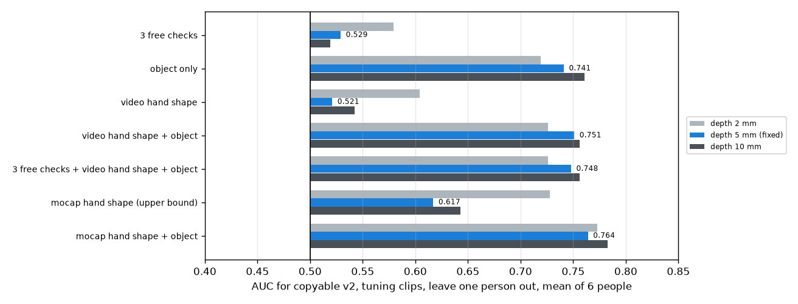
깊이 2mm깊이 5mm (고정)깊이 10mm
튜닝 클립의 v2 라벨 AUC, 사람 하나씩 빼고 6명 평균. 세로선이 0.5.
EXP-13의 영상 손 모양 항목은 신호를 잃음(이전 라벨 0.632, v2 0.521). 리타게팅 부작용을 배우고 있었음. 이전 라벨에서는 손을 크게 벌린 잡기일수록 늘린 Allegro 손가락 끝이 물체 밖으로 밀려 "따라할 수 없음"이 됐음.
물체 종류만으로 v2 라벨을 잘 예측함(0.74, 다른 깊이에서 0.72~0.76). v2에서 따라할 수 있는지는 주로 물체의 성질임. 납작하거나 붐비거나 넓은 물체는 실패하고 작고 단단한 물체는 통과함.
영상 항목은 물체 위에 거의 더하지 못함. 손 모양 +0.01, 무료 항목 3개는 0.
손 자세에는 정보가 조금 있음(모션캡처 손 모양 0.62). 원본 어안 영상의 MediaPipe로는 되살리지 못함(0.52). 같은 물체 안에서는 모션캡처 손 모양도 거의 더하지 못함(0.55).
평가 2에 대한 의미: Muse Spark가 물체를 알아보고 큰 로봇 손이 어떤 물체에 약한지 어느 정도 안다면 0.74 가까이 나올 수 있고, 지금의 체크리스트는 주 비교에서 짐. 보완재 비교에서는 약 0.01을 더함.
물리적으로 말이 되는 라벨이 문제를 영상이 아니라 물체의 문제로 만듦. 체크리스트는 영상 품질을 재도록 설계됐음. 이제 평가 2의 주 문제는 라벨이 아니라 이 불일치임.
깊이 한도는 수치를 몇 백분의 일 바꿈. 실제로 쓸 수 있는 신호 중에서는 모든 한도에서 물체 종류가 가장 강함. 2mm에서는 모션캡처 손 모양(영상 방법이 아닌 상한)이 0.728로 물체(0.719)를 조금 넘음.
EXP-18물체 형상이 "따라할 수 있음" 신호를 담는가 (선택지 A 점검)10/27
질문
EXP-17에서 v2 라벨은 주로 물체의 성질이었다(물체 종류만으로 0.741). 선택지 A는 질문과 라벨을 그대로 두고 "물체 성질"을 Muse Spark가 영상에서 매기는 구체적인 물체 항목들로 바꾼다. 이 방향은 물체 이름이 아니라 몇 가지 물체 속성으로 신호를 담을 수 있을 때만 의미가 있다. 담을 수 있는가, 처음 보는 물체에서도 통하는가.
입력
v2 라벨이 붙은 튜닝 클립 2,385개(47.0%), 물체 33개. 검증 클립은 쓰지 않음.
방법
물체 3D 모델에서만 뽑은 특징 7개로 로지스틱 회귀. 클립마다 그 물체의 값을 줌. 특징, 시험, 판정 규칙은 계산 전에 측정 계획에 적음.
물체 특징 7개 (3D 모델)
방향을 맞춘 경계 상자의 가장 긴 변, 중간 변, 가장 짧은 변
납작함(짧은 변 / 긴 변), 길쭉함(중간 변 / 긴 변)
부피, 채움(부피 / 상자 부피). 모델이 닫혀 있지 않아 부피는 볼록 껍질로 계산
시험과 판정 규칙 (계산 전에 고정)
사람 하나씩 빼기: 사람별 AUC의 6명 평균
물체 하나씩 빼기: 채점하는 물체를 모델이 한 번도 보지 않음. 합친 AUC와 시퀀스 재추출 95% 구간
둘 다 0.65 이상이면 통과, 하나라도 0.60 미만이면 실패, 그 사이면 약함
물체 종류 대 물체 형상 (튜닝 클립, AUC)
시험
물체 종류 (참고)
물체 형상
사람 하나씩 빼기, 6명 평균
0.742
0.695 (사람별 0.65~0.76)
물체 하나씩 빼기, 합침
0.5 (처음 보는 물체는 채점 불가)
0.673 (0.645~0.698)
미리 정한 규칙으로 판정: 통과. 가장 강한 특징 하나는 물체의 가장 긴 변이다. 혼자서 AUC 0.32, 즉 방향을 뒤집으면 0.68로, 물체가 길수록 따라할 수 있는 경우가 적다. 부피도 같은 방향(0.38).
물체 종류물체 형상통과선 0.65실패선 0.60따라할 수 있음 0%50%100%
왼쪽: 사람 또는 물체를 하나씩 뺐을 때의 AUC. 오른쪽: 물체마다 가장 긴 변과 가장 짧은 변, 점 크기는 클립 수, 색은 따라할 수 있는 비율. 길거나 부피가 큰 물체(키보드, 보온병, 공룡 장난감, 그릇)는 대부분 따라할 수 없고, 손에 쥘 만한 작은 물체(거치대, 머그, 캔, 병)는 대부분 따라할 수 있다.
형상으로 덜 설명되는 물체: 우유팩 두 개(높이 19cm, 8%와 19%), 아령(18cm, 10%), 작은 정육면체인데 46%만 나온 퍼즐 장난감.
물체 크기와 모양 숫자 7개가 물체 이름이 주는 신호의 대부분을 되살림(0.695 대 0.742). 이름과 달리 처음 보는 물체에서도 통함(0.673 대 0.5).
선택지 A에 근거가 있음. Muse Spark에게 물체에 대해 구체적으로 묻는 체크리스트(손에 비해 얼마나 큰가, 얼마나 긴가, 납작한가, 넓은가)가 신호를 담을 수 있고, 새 물체로도 가져갈 수 있음. 재사용할 수 있는 점수에 필요한 성질.
보이지 않은 것: Muse Spark가 영상에서 이 크기들을 읽을 수 있는지, 그리고 그냥 물어본 Muse Spark가 똑같이 잘하는지. 둘 다 유료 실행이 필요함.
한계: 물체가 33개뿐임. 물체 하나씩 빼기 구간은 물체가 아니라 시퀀스를 재추출해서, 물체에 대한 실제 불확실성보다 좁음. 부피와 채움은 볼록 껍질 기준. 결과를 거의 특징 하나(가장 긴 변)가 끌고 감.
다음: Muse Spark 물체 항목(손 대비 크기, 길이, 납작함, 폭, 손잡이, 주변 물체 붐빔)과 상·중·하 기준을 쓰고, 3D 모델 수치를 대신 넣어 무료로 점검한 뒤, 같은 기준값으로 검증 클립 v2 라벨을 냄.
EXP-19체크리스트용 물체 항목 6개, 대리 등급으로 점검10/27
질문
선택지 A는 "물체 성질"을 Muse Spark가 상·중·하로 매기는 구체적인 항목들로 바꾼다. EXP-18에서 정확한 물체 크기는 신호를 담았다. 기준을 고정한 거친 3단계 항목 6개도 그 신호를 지키는가. 여기서는 Muse Spark가 답할 것을 대신해 정답(3D 모델, 모션캡처, 물체를 직접 본 판단)에서 등급을 냄.
입력
v2 라벨이 붙은 튜닝 클립 2,385개(47.0%). 검증 클립은 쓰지 않음.
방법
항목, 기준, 통과 규칙은 계산 전에 측정 계획에 적음. 상은 항상 "큰 네 손가락 로봇 손에 쉬움"이고, 방향은 데이터가 아니라 항목의 뜻으로 정함. 등급 6개로 로지스틱 회귀. 사람 하나씩 빼기(6명 평균 AUC)와 물체 하나씩 빼기(합친 AUC), 둘 다 0.65 이상이면 통과.
항목과 기준, 대리 등급의 출처
항목
상
중
하
대리 등급
손 대비 크기 (가장 긴 변)
15cm 이하
15~25cm
25cm 초과
3D 모델 상자
모양 (중간 변 / 긴 변)
0.6 이상
0.3~0.6
0.3 미만
3D 모델 상자
두께 (가장 짧은 변)
4cm 이상
2~4cm
2cm 미만
3D 모델 상자
감쌀 폭 (중간 변)
8cm 이하
8~14cm
14cm 초과
3D 모델 상자
손잡이
있음
일부
없음
물체당 영상 한 장을 눈으로
빈 공간 (가장 가까운 다른 물체까지)
10cm 이상
4~10cm
4cm 미만
접촉 프레임의 모션캡처 물체 위치
손잡이는 라벨을 보기 전에 아래 시트로 판단했다. 있음: 커피포트, 아령, 보온병, 머그 두 개, 감자 으깨개, 뒤집개, 나무 숟가락, 꽃병. 일부: 화이트보드 지우개. 나머지는 없음.
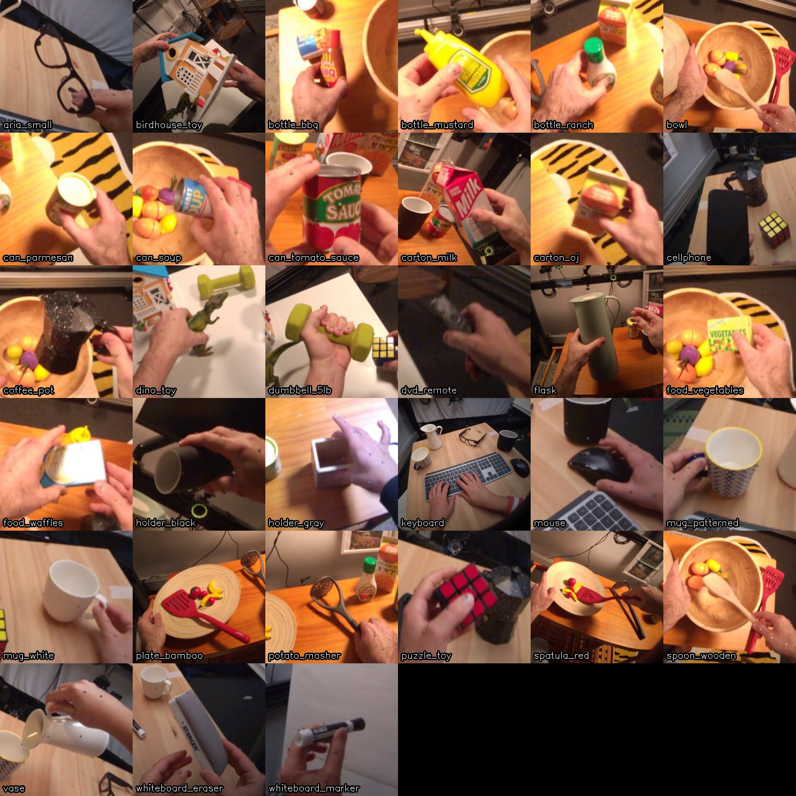
물체마다 잡는 장면 한 장. 손잡이 항목을 판단하는 데만 썼다.
물체 항목 6개 대 정확한 크기 (튜닝 클립, AUC)
시험
항목 6개
정확한 형상 (EXP-18)
사람 하나씩 빼기, 6명 평균
0.683 (0.60~0.73)
0.695
물체 하나씩 빼기, 합침
0.666 (0.639~0.693)
0.673
미리 정한 규칙으로 판정: 통과.
항목별
항목
혼자 AUC
전체 모델의 가중치
손 대비 크기
0.673
+2.16
모양
0.567
−0.30
두께
0.536
−0.24
감쌀 폭
0.518
−1.10
손잡이
0.478
−0.18
빈 공간
0.534
+0.09
하중상정확한 형상항목 6개통과선 0.65
왼쪽: 항목과 등급별 "따라할 수 있음" 비율. 오른쪽: 거친 항목 6개가 정확한 크기의 신호를 거의 다 지킨다.
기준을 고정한 거친 항목 6개가 물체 신호를 거의 다 지킴(0.683, 0.666 대 정확한 크기 0.695, 0.673). Muse Spark가 대략 맞게 매기면 체크리스트가 "따라할 수 있음" 신호를 담을 수 있고, 처음 보는 물체에도 통함.
거의 모든 일을 손 대비 크기가 함(혼자 0.673).
뜻과 다르게 움직인 항목 둘. 손잡이: 손잡이 있는 물체가 조금 덜 따라할 수 있음(0.478). 여기서 손잡이 있는 물체는 대부분 긴 도구(뒤집개, 으깨개, 숟가락)나 큰 물체(보온병, 커피포트)라 크기가 이김. 감쌀 폭: 크기를 알면 음의 가중치. 같은 길이라면 가는 물체(숟가락, 마커, 리모컨)가 더 어려움. 방향은 튜닝 클립에서 회귀가 배우고, 기준은 그대로 둠.
빈 공간은 거의 더하지 못함(0.534). 대부분의 잡기에 16cm 이상 여유가 있음(중앙값).
보지 않은 것: Muse Spark가 어안 영상에서 이 등급을 읽을 수 있는지. 유료 실행이 필요함. 전체 실행 전에 튜닝 클립 몇 개로 Muse Spark 등급을 이 대리 등급과 비교하는 짧은 파일럿을 함.
EXP-20검증 클립 v2 라벨 (튜닝에서 고정한 기준값)10/27
질문
v2 라벨은 튜닝 클립에서 정의하고 받아들였다(EXP-16). 같은 기준값으로 검증 클립 1,426개에서는 어떻게 나오는가. 라벨만 본다. 검증 클립에서 어떤 모델이나 체크리스트도 채점하지 않았다.
입력
EXP-11의 검증 클립, 사람 P0001, P0010, P0012.
방법
EXP-16과 같은 코드와 기준값: 위치 맞춤 리타게팅, 손 이동 최대 2cm, 잡기 1.5cm, 도달 2.0cm, Allegro 메쉬 점이 물체 안 5mm를 넘지 않음.
튜닝 대 검증
튜닝
검증
클립
2,385
1,426
따라할 수 있음
47.0%
46.4%
사람별
44~54%
P0001 46%, P0010 51%, P0012 43%
같은 물체 안 손 크기 상관
+0.04
−0.08
실패: 충돌 / 도달 / 잡기
25.5% / 10.9% / 3.9%
31.1% / 8.6% / 5.6%
Allegro 손가락 끝–사람 손가락 끝 (중앙값)
11.5mm
11.4mm
깊이 2mm / 5mm / 10mm (도달 2cm)
18% / 47% / 66%
20% / 46% / 65%
검증에서 가장 낮은 물체는 키보드 1%, 보온병 4%, 그릇 15%, 꽃병 16%, 오렌지주스 팩 20%. 가장 높은 물체는 회색 거치대 93%, 검은 거치대 92%, 흰 머그 84%, 화이트보드 마커 80%.
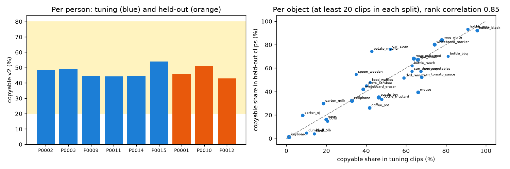
튜닝검증계획의 20~80% 범위물체같은 값 선
왼쪽: 사람별 "따라할 수 있음" 비율. 오른쪽: 두 세트에 각각 클립 20개 이상인 물체 30개의 튜닝 비율 대 검증 비율. 순위 상관 0.85.
고정한 v2 규칙이 그대로 통함. 검증 46.4%로 튜닝과 가깝고 범위 안이며, 사람별 43~51%. 이전 라벨의 사람별 차이(30~73%)는 사라짐.
물체별 비율이 두 세트에서 거의 같음(순위 상관 0.85). 그래서 튜닝에서 만든 물체 기준선은 검증에서도 강할 것이고, 주 비교는 이 점을 염두에 두고 읽어야 함.
이 라벨이 이제 평가 2 AUC의 정답. 검증 클립에서는 아직 어떤 점수나 체크리스트도 돌리지 않음.
2진행 중인 작업
접촉 구간 검출
영상만 보고 손별로 접촉 시작과 끝을 찾는다. 파일럿 3개(EXP-06)로 전 과정이 끝까지 도는 것을 확인했고, 측정 계획을 지원서의 세 비교 대상으로 다시 맞췄다. 방법 B는 구현해서 파일럿으로 점검했다(EXP-14). 유료 호출이 보류 중이라 튜닝 나머지 47개의 SAM 실행을 기다린다.
비교 대상
A. Muse Spark 단독. 5fps(6프레임마다 1장) 프레임 여러 장을 시각과 함께 한 번에 보내고, 손별로 접촉 여부를 받음.
B. SAM 규칙. SAM 3.1 손·물체 마스크(10fps)의 겹침과 동반 이동으로 접촉 신호를 만듦. 기준값과 시작 지연(파일럿에서 약 0.2초)은 튜닝 50개에서 정함.
C. B + Muse Spark 경계 확인. B의 시작과 끝마다 주변 약 7프레임(30fps)을 Muse Spark에 보내 첫 접촉 또는 마지막 접촉 프레임, 근거, 확신도를 받음.
세 방법 모두 30fps 손별 접촉 구간을 내고, 짧은 틈을 잇고 아주 짧은 구간을 버리는 규칙은 똑같이 적용함(튜닝에서 정함). 참고 행으로 "항상 접촉", "항상 비접촉"을 같이 보고함. EXP-06의 특징 13개 로지스틱 회귀는 부록.
채점
정답: 정리한 촉각 장갑(손당 80개 센서 합 > 800에서 0.1초 이하 끊김은 잇고 0.1초보다 짧은 조각은 버림). 압력이 임계값을 넘나들며 생기는, 영상으로는 볼 수 없는 깜빡임을 없앤 것. 장갑 원신호와 데이터셋 라벨은 확인용으로 같이 채점.
EXP-07의 잡기 집계(2,152개)는 클립 수를 가늠하는 용도였고, 보고 수치에는 EXP-11 클립을 씀.
정답이 있는 136개 시퀀스의 HOT3D 영상을 모두 받음.
카메라 보정 방향 확정. 보정값과 2D 박스는 원본 기준이고 영상에 쓸 때 시계 방향 90도 회전 (EXP-08).
손가락 끝 3D 위치를 UmeTrack 손 모델로 직접 계산. 잡는 동안 손가락 끝이 물체 표면에서 중앙값 2.3mm (EXP-09).
평가 2 클립 완성. 모션캡처 손–물체 거리로 잘라 튜닝 2,385개, 검증 1,426개 (EXP-11).
처음 라벨은 리타게팅 부작용을 주로 재서 버림. 세 리타게팅 방식 모두 미리 정한 기준을 통과하지 못함 (EXP-15).
정답 라벨 v2: 위치 맞춤 리타게팅, 메쉬 충돌, 접촉점 도달. 튜닝 47%가 "따라할 수 있음", 손 크기 상관 +0.04로 미리 정한 규칙 통과. 실패는 충돌 25.5%, 도달 10.9%, 잡기 3.9% (EXP-16).
v2 라벨로 다시 잼: 물체 종류만으로 0.74, 무료 항목 3개 0.53, 영상 손 모양 0.52, 영상 손 모양 + 물체 0.75 (EXP-17).
남은 문제: 체크리스트는 영상 품질을 재는데 정답은 주로 물체의 성질.
평가 2 방향 결정: 질문과 v2 라벨은 그대로, "물체 성질"을 구체적인 물체 항목으로 늘림. 물체 3D 모델의 크기·모양 숫자 7개로 0.695(물체 이름 0.742), 처음 보는 물체에서도 0.673으로 미리 정한 기준 통과 (EXP-18).
물체 항목 6개(계산 전에 고정). Muse Spark가 클립 프레임을 보고 상·중·하로 매기며, 상은 항상 "큰 네 손가락 로봇 손에 쉬움". 화면 속 사람 손(손목–중지 끝 약 19cm)을 자로 씀: 손 대비 크기(가장 긴 변, 상 15cm 이하·하 25cm 초과), 모양(중간 변 / 긴 변, 상 0.6 이상·하 0.3 미만), 두께(가장 짧은 변, 상 4cm 이상·하 2cm 미만), 감쌀 폭(중간 변, 상 8cm 이하·하 14cm 초과), 손잡이(있음·일부·없음), 빈 공간(잡는 곳에서 가장 가까운 다른 물체까지, 상 10cm 이상·하 4cm 미만).
무료 점검 통과: 정답에서 낸 대리 등급으로 사람 하나씩 빼기 0.683, 물체 하나씩 빼기 0.666 (정확한 크기 0.695, 0.673). 손 대비 크기가 대부분을 설명하고, 손잡이와 감쌀 폭은 크기를 알면 뜻과 반대 방향으로 학습됨 (EXP-19).
검증 클립 v2 라벨 완료: 46.4%, 사람별 43~51%, 물체별 비율이 튜닝과 순위 상관 0.85. 라벨만 냈고 채점은 아직 (EXP-20).
평가 2 유료 실행 준비 완료(무료). 클립 세트: 점수 가중치 학습 400개, 항목 학습 1,985개(나머지 튜닝), 검증 1,426개. 겹치는 클립을 합친 SAM 구간 513개를 10fps로 잘라 두고, Muse Spark용 프레임을 클립당 6장(10,956장) 뽑음. SAM 결과에서 가시성과 접촉 명확성을 내는 코드와 전체 채점 경로를 튜닝 대리 등급으로 점검함(결과 아님).
다음(유료 호출 보류 중): SAM 파일럿 3구간 → Muse Spark 체크리스트와 단독 질문 파일럿 각 5클립 → 대리 등급과 비교 → 전체 실행.
3장갑 낀 손 검출
OpenGraph는 촉각 장갑을 낀 손이라 MediaPipe 손 관절 검출이 불안정하다. 8개 에피소드 19,363프레임에서 한 손 이상 검출된 비율을 쟀다.
에피소드별 MediaPipe 검출률.
평균 82.3%. 배경이 장갑과 비슷한 색일수록 낮음 (에피소드 48 스프레이병 14%, 에피소드 66 어두운 매트 100%).
미검출은 좌우 라벨 오류가 아니라 손 자체를 놓친 것. 양손이 잡힌 7,101프레임에서 좌우 판정은 모두 맞음.
영향 범위는 MediaPipe를 쓰는 "리타게팅 복원성" 항목에 한정. 평가 1은 SAM 3.1을 쓰고(EXP-03), 평가 2는 맨손인 HOT3D에서 진행.
4방법 개요
처리 흐름
분할. SAM 3.1에 10fps 영상과 프롬프트 hand, small object를 넣어 프레임마다 손과 물체의 박스와 마스크를 얻음.
경계 확정. 접촉 시작과 끝 주변 약 7프레임(30fps)만 Muse Spark에 보내 경계와 근거를 받음.
자르기. 경계 앞뒤에 여유를 두고 구간을 잘라냄.
채점. 구간마다 12개 항목을 등급으로 매기고 로지스틱 회귀로 0~100점 산출.
채점 항목
가시성카메라 안정성접촉 명확성동작 완결성손가락 가림손 모양 적합도
물체: 손 대비 크기물체: 모양물체: 두께물체: 감쌀 폭물체: 손잡이물체: 빈 공간
"물체 성질" 하나를 물체 항목 6개로 늘림(EXP-17~19). 화면 속 사람 손(손목–중지 끝 약 19cm)을 자로 삼아 상·중·하로 매김. 가시성과 접촉 명확성은 SAM 결과에서, 카메라 안정성·동작 완결성·손 모양 적합도는 영상에서 무료로, 손가락 가림과 물체 항목 6개는 Muse Spark가 클립 프레임 6장을 보고 매김.
장면 전환이 있거나 접촉이 없으면 0점. 등급(상 1, 중 0.5, 하 0)을 입력으로 로지스틱 회귀를 학습하고, 확률에 100을 곱해 점수로 씀. 가중치를 그대로 읽을 수 있어 점수의 근거를 설명할 수 있음.
비교 대상: 평가 1은 Muse Spark 단독, SAM 규칙, SAM 규칙 + Muse Spark 경계 확인. 평가 2는 체크리스트 없이 같은 질문을 받은 Muse Spark, 물체 기준선, Muse Spark + 12개 항목. GraspGrade는 기존 데이터 필터를 대체하지 않고 그 위에 더하는 층으로 설계함. 자세한 내용은 요약 페이지의 측정 계획.
5데이터와 분할
사용 데이터
OpenGraph Ego-Tactile
HOT3D (Aria)
용도
평가 1 (접촉 시점)
평가 2 (로봇 재현 가능성)
규모
72 에피소드, 138,629 프레임, 1.28시간
정답 있는 136 시퀀스, 9명, 480,375 프레임
영상
1인칭 1080p 30fps
1인칭 어안 1408×1408 30fps
정답 신호
양손 촉각 장갑 (손당 80 센서)
모션캡처 손·물체 3D 포즈, 물체 3D 모델 33종
손
베이지 장갑
맨손
튜닝 / 검증
50 / 22 에피소드
6명 85 시퀀스 / 3명 51 시퀀스
분할은 seed 20261026으로 고정했고 다시 뽑지 않는다. 검증 세트는 최종 측정 전까지 쓰지 않는다. HOT3D는 사람 단위로 나눠 같은 사람이 양쪽에 섞이지 않게 했다.